第41章分子軌道から結晶のバンドへ（1）— 1 次元原子鎖・状態密度・有効質量・電気伝導
水素原子 2 個が近づくと，それぞれの 1s 軌道から，結合性軌道と反結合性軌道の 2 本の分子軌道ができた（第39章 39.3）．では原子を 3 個，4 個，…と一列に並べていくと，何が起こるだろうか．軌道の本数は原子の数 $N$ とともに増えるが，エネルギーが際限なく広がるわけではなく，決まった幅の中に $N$ 本が詰まっていく．$N$ が $10^{22}$ を超える固体では，隣り合う準位の間隔は $10^{-22}\ \mathrm{eV}$ 程度になり，準位は事実上切れ目のない帯（バンド，band）になる．銅線に電流が流れ，シリコンが半導体で，ダイヤモンドが絶縁体である理由は，この「帯」と，帯の中での電子の振る舞いから説明される．
古典物理では，金属の電子を，質量 $m_{\mathrm e}$ の自由な粒子が散乱されながら動くものとして扱い，Ohm の法則を導いた（AD 03「大学基礎物理学」第37章 37.3）．量子力学では，電子は原子軌道の重ね合わせでできた波として結晶全体に広がる．その波の波数 $k$ とエネルギー $E$ の関係 $E(k)$（バンド構造）が，電子の速さ，応答の鈍さ（有効質量），電流を運ぶ担い手が電子か正孔かを決める．結晶の中の電子の質量は真空中の $m_{\mathrm e}$ と違い，ときには負にさえなる．この章では，計算がもっとも簡単な 1 次元の原子鎖を，行を飛ばさずに解いて，その仕組みを最初から最後まで確かめる．
この章は，分子軌道法（第38〜40章）と固体物理学（姉妹編「固体物理学（AD 06）」第15〜17章）をつなぐ橋である．固体物理学ではバンド構造を先に与えて議論を進めるが，ここでは分子から出発して，バンドが「原子軌道の結合性と反結合性の並び」であることを見る．次の章（第42章）で 2 次元・3 次元と $p$ 軌道に拡張する．
- 原子を $N$ 個並べると準位が $N$ 本になり，すべてが幅 $4|\beta|$ の窓の中に入ることを，$N=2,\dots,7$ の具体的な計算で確かめられること
- 周期境界条件と Bloch（ブロッホ）和を使って，単一原子鎖の $E(k)=\alpha+2\beta\cos ka$ を導けること（$k$ が離散的な値をとること，第 1 Brillouin（ブリルアン）域，Bloch の定理の入口）
- $s$ 軌道と $p$ 軌道について，$k=0$ と $k=\pm\pi/a$ の波動関数の符号から，結合性・反結合性，$\beta$ の符号，バンド幅 $4|\beta|$ を説明できること
- 状態密度 $D(E)$ を求め，1 次元では準位がバンドの端に集まる理由（van Hove（ファン・ホーフ）特異点）を説明できること
- LCAO の結果と自由電子の結果を比べて $\alpha$，$\beta$ の意味を理解し，有効質量 $m^*=\hbar^2\big/(\mathrm{d}^2E/\mathrm{d}k^2)$ をバンドの曲率から導けること
- 有効質量の符号と正孔の関係，半導体の有効質量・移動度の実例，$\sigma=ne_0^2\tau/m^*$（成り立つ範囲とともに）を導き，銅の伝導度を見積もれること
- 半分詰めの鎖・電子が「動く」こと・結合交替による Peierls（パイエルス）転移を，波動関数の符号と $k$ 空間の占有から説明できること
もとにしたノート：望月泰英『物理学ノート 量子力学』の LCAO の紙面（単一原子鎖のバンド構造，有効質量，電気伝導度，バンド図の物質構造的理解）．関連シミュレーター：分子軌道からバンドへ．
41.1 原子を並べると準位は帯になる — $N$ 個の準位と $4|\beta|$ の窓
41.1.1 模型の約束 — 各原子に軌道が 1 個
間隔 $a$ で一列に並んだ $N$ 個の原子を考える（$n$ 番目の原子の位置を $x_n=na$ とする）．各原子には，電子が入りうる軌道が 1 個だけあるとする（たとえば水素原子の $1s$ 軌道，あるいはナトリウムの $3s$ 軌道）．$n$ 番目の原子の軌道を $\phi_n(x)=\phi(x-na)$ と書く．同じ形の関数が原子ごとに平行移動しているだけである．電子 1 個のハミルトニアン $\hat{H}$ は，すべての原子核（と他の電子の平均的な効果）が作るポテンシャルの中を動く電子のもので，第39章の $\mathrm{H_2^+}$ を $N$ 個の原子に拡張したものになっている．分子軌道を原子軌道の 1 次結合 $\psi=\sum_n c_n\phi_n$ の形で探す（LCAO）と，係数 $c_n$ を決める永年方程式が得られる．この方程式に現れる積分を，次のように単純化する．
定義41.1 強束縛模型（Hückel 型の 1 次元鎖）
各原子に規格化された軌道 $\phi_n$ が 1 個あり，次の 3 つを仮定する．
(i) 重なり積分を無視する：$S_{mn}=\braket{\phi_m}{\phi_n}=\delta_{mn}$．
(ii) 対角要素はすべての原子で等しい：$H_{nn}=\mel{\phi_n}{\hat{H}}{\phi_n}=\alpha$．
(iii) 隣り合う原子の間だけ相互作用がある：$H_{n,n\pm1}=\mel{\phi_n}{\hat{H}}{\phi_{n\pm1}}=\beta$．それ以外の $H_{mn}$ は $0$ とする．
$\alpha$ を軌道エネルギー，$\beta$ を共鳴積分（あるいはホッピング積分）という．$\beta$ は電子が隣の原子へ乗り移る（hop する）ときの積分である．
注意：$\alpha$，$\beta$ は Hückel 法の記号（スピン関数や 2 電子積分とは別物）
この章の $\alpha$，$\beta$ は，第39章・第40章の Hückel 法と同じく，電子 1 個のハミルトニアンの行列要素（1 電子積分）である．スピン関数の $\alpha,\beta$（第23章），2 電子積分の $U_{ab}$，$J_{ab}$（第35章），微細構造定数の $\alpha$ とは無関係である．$s$ 軌道の鎖では $\beta\le0$（負）になる（41.3 節）．姉妹編「密度汎関数理論（AD 07）」や固体物理学のホッピングの記号 $t$ とは $t=-\beta$（$t\ge0$）の関係にあり，$E(k)=-2t\cos ka$ と書かれる．本書では分子軌道法との連続性のために $\beta$ を使う．なお，$\beta$ の符号は軌道の位相の約束にも依存する．軸方向の $p$ 軌道をすべて同じ向きにとった鎖では $\beta\gt0$ になる（41.3.3）．$p$ 軌道の向きを 1 つおきに反転させると $\beta\lt0$（$t=-\beta\gt0$）となり，同じバンドが $k$ を $\pi/a$ だけずらして描かれるだけである．固体物理学や AD 07 の $t$ は，この「$t\gt0$ となる位相の約束」で書かれている．
41.1.2 開いた鎖の固有値 — $N=2$，$3$，そして一般の $N$
まず，両端のある（開いた）$N$ 原子の鎖の準位を求める．$N=2$ の場合は，第39章の $\mathrm{H_2^+}$ と同じ永年方程式で，$S=0$ の場合にあたる．
$$ \begin{vmatrix}\alpha-E&\beta\\ \beta&\alpha-E\end{vmatrix}=(\alpha-E)^2-\beta^2=0\quad\Longrightarrow\quad E=\alpha\pm\beta . $$$\beta\lt 0$ なので，$E=\alpha+\beta$ が低く（結合性軌道），$E=\alpha-\beta$ が高い（反結合性軌道）．$N=3$ の場合は，
$$ \begin{vmatrix}\alpha-E&\beta&0\\ \beta&\alpha-E&\beta\\ 0&\beta&\alpha-E\end{vmatrix} =(\alpha-E)\bigl[(\alpha-E)^2-\beta^2\bigr]-\beta\bigl[\beta(\alpha-E)-0\bigr] =(\alpha-E)\bigl[(\alpha-E)^2-2\beta^2\bigr]=0 $$となり，$E=\alpha,\ \alpha\pm\sqrt2\,\beta$ の 3 本の準位を得る（1 行目で展開した．第 1 項は $(\alpha-E)$ に $2\times2$ の行列式 $(\alpha-E)^2-\beta^2$ をかけたもの，第 2 項は $-\beta$ に余因子をかけたものである）．一般の $N$ では次のようになる．
定理41.1 開いた $N$ 原子鎖の準位と固有ベクトル
定義41.1 の模型で，両端のある $N$ 原子鎖の $N$ 本の準位は
\begin{equation} E_j=\alpha+2\beta\cos\frac{j\pi}{N+1},\qquad c_n^{(j)}=\sqrt{\frac{2}{N+1}}\,\sin\frac{jn\pi}{N+1}\qquad(j=1,2,\dots,N;\ n=1,\dots,N) \label{eq:41-open} \end{equation}である．$c_n^{(j)}$ は $j$ 番目の準位の $n$ 番目の原子の係数で，$j-1$ 個の節をもつ．
導出の要点（詳しくは第40章 40.5.1）
式 \eqref{eq:41-open} は，第40章 40.5.1 節の公式40.5（炭素の直鎖の Hückel 準位）と同じものである．原子の番号を，第40章は $\mu$，本章は原子の位置 $x_n=na$ と結びつけるために $n$ と書く．導出の筋道だけを思い出しておく．永年方程式の $n$ 行目は（$S$ が単位行列なので）$\alpha c_n+\beta(c_{n-1}+c_{n+1})=E\,c_n$，端の条件は $c_0=c_{N+1}=0$ である．$c_n=C\sin n\theta$ を代入すると，和積の公式 $\sin(n-1)\theta+\sin(n+1)\theta=2\sin n\theta\cos\theta$ から $E=\alpha+2\beta\cos\theta$ となり，$c_{N+1}=0$ から $(N+1)\theta=j\pi$，独立な解は $j=1,\dots,N$ の $N$ 個，規格化から $C=\sqrt{2/(N+1)}$ を得る．
この結果は，第10章の「箱の中の粒子」$\psi_n(x)=\sqrt{2/L}\,\sin(n\pi x/L)$ の離散版である．連続な箱では $x$ が連続なので準位は無限個あったが，原子が $N$ 個の鎖では座標 $n$ が離散的なので，準位は $N$ 個だけになる．また，$j$ が小さいとき $\cos\theta_j\approx1-\theta_j^2/2$ から $E_j\approx\alpha+2\beta+|\beta|\theta_j^2$ となり，$\theta_j$ の 2 乗に比例する箱の中の粒子のエネルギーに一致する．
例題41.1 $N=100$ の鎖 — 窓の端の準位の間隔と中央の間隔
$N=100$ の開いた鎖（$\beta\lt 0$）について，(1) 最低準位が窓の下端 $\alpha-2|\beta|$ からどれだけ上にあるか，(2) 最低の 2 準位の間隔 $E_2-E_1$，(3) 窓の中央付近（$j=50$ と $j=51$）の間隔を $|\beta|$ を単位として求めよ．また，(2) と (3) の比を，小さな $\theta$ での展開を使って見積もれ．
解答 式 \eqref{eq:41-open} で $N+1=101$，$\beta=-|\beta|$ とおくと $E_j=\alpha-2|\beta|\cos\dfrac{j\pi}{101}$ である．
まず，この鎖の準位を表にまとめる（$E_j=-E_{101-j}+2\alpha$ なので，準位は $\alpha$ を中心に上下対称である）．
| $j$ | 1 | 2 | 3 | 50 | 51 | 98 | 99 | 100 |
|---|---|---|---|---|---|---|---|---|
| $(E_j-\alpha)/|\beta|$ | $-1.99903$ | $-1.99613$ | $-1.99130$ | $-0.03110$ | $+0.03110$ | $+1.99130$ | $+1.99613$ | $+1.99903$ |
(1) $E_1-(\alpha-2|\beta|)=2|\beta|\bigl(1-\cos\dfrac{\pi}{101}\bigr)\approx|\beta|\Bigl(\dfrac{\pi}{101}\Bigr)^2=9.68\times10^{-4}|\beta|$（$1-\cos\theta\approx\theta^2/2$）．最低準位は窓の下端のほぼ $10^{-3}|\beta|$ 上にある．
(2) $E_2-E_1=2|\beta|\bigl(\cos\dfrac{\pi}{101}-\cos\dfrac{2\pi}{101}\bigr)\approx|\beta|\Bigl(\dfrac{\pi}{101}\Bigr)^2(4-1)=2.90\times10^{-3}|\beta|$．
(3) 中央では $E_{51}-E_{50}=2|\beta|\bigl(\cos\dfrac{50\pi}{101}-\cos\dfrac{51\pi}{101}\bigr)=4|\beta|\sin\dfrac{\pi}{2}\sin\dfrac{\pi}{202}=4|\beta|\sin\dfrac{\pi}{202}=6.22\times10^{-2}|\beta|$（差を積にする公式 $\cos A-\cos B=-2\sin\frac{A+B}{2}\sin\frac{A-B}{2}$ を使った．$\frac{A+B}{2}=\frac{\pi}{2}$ である）．
比は $\dfrac{E_{51}-E_{50}}{E_2-E_1}\approx\dfrac{4\,(\pi/202)}{3\,(\pi/101)^2}=\dfrac{2\cdot101}{3\pi}\approx21$ である．窓の中央の準位の間隔（$0.062|\beta|$）は，平均間隔 $4|\beta|/N=0.04|\beta|$ の約 1.6 倍，端の間隔（$0.0029|\beta|$）は約 $1/14$ で，準位は窓の両端ほど密に並ぶ．この事実は 41.4 節で状態密度として定量的に扱う．
41.1.3 $N$ が大きくなると準位は帯になる
式 \eqref{eq:41-open} からわかるように，$N$ をどれほど大きくしても，$|\cos\theta|\le1$ なので $|E_j-\alpha|\lt2|\beta|$ である．つまり，準位の数だけが $N$ に比例して増え，準位の入る窓の幅 $4|\beta|$ は $N$ によらない．窓の中の準位の平均間隔は $4|\beta|/N$ であり，たとえば $|\beta|=1\ \mathrm{eV}$，$N=10^{22}$（銅 $1\ \mathrm{cm^3}$ の原子数は $8.5\times10^{22}$）なら $4\times10^{-22}\ \mathrm{eV}$ である．室温の熱エネルギー $k_{\mathrm B}T=0.026\ \mathrm{eV}$ に比べて桁違いに小さいので，準位は連続とみなせる．この連続な準位の集まりをバンド（energy band）とよぶ．バンドの幅 $4|\beta|$ は，隣り合う原子の軌道の相互作用 $|\beta|$ の大きさで決まる．
この見方は，第39章の $\mathrm{H_2^+}$ の結合性軌道と反結合性軌道の分裂（$2|\beta|$）が，原子が増えると $4|\beta|$ の帯に育つ，というものである．関連シミュレーター「分子軌道からバンドへ」の 1 番目のタブで，原子を 1 個ずつ増やしたときの準位の変化を確かめられる．
41.2 単一原子鎖のバンド $E(k)=\alpha+2\beta\cos ka$ — Bloch 和と周期境界条件
前節の開いた鎖では，係数 $c_n$ が $\sin n\theta$ の定在波で，準位ごとに両端の効果が入り込んでいた．しかし，$10^{22}$ 個の原子の鎖では，2 つの端は，物質の性質を決める内部の電子にほとんど影響しない．そこで，端をなくすために，鎖の両端をつないで環にする．これを周期境界条件（Born–von Kármán（ボルン・フォン カルマン）の周期境界条件）という．第10章 10.7 節で，箱の中の自由電子に同じ条件を課して状態密度を数えた．ここではそれを原子鎖に使う．
41.2.1 周期境界条件と Bloch 和
$N$ 個の原子を環に並べ，$N+1$ 番目の原子を 1 番目の原子と同一視する（$\phi_{n+N}\equiv\phi_n$）．環になると 1 番目と $N$ 番目も隣り合うので，$H_{N,1}=H_{1,N}=\beta$ が加わり，永年方程式の $n$ 行目は，すべての $n$ について（$n\pm1$ は $N$ を法とする）
\begin{equation} \alpha c_n+\beta\,(c_{n-1}+c_{n+1})=E\,c_n \label{eq:41-secular} \end{equation}となる．どの原子も同等なので，係数の大きさが原子によらない解，$c_n=e^{ikna}$ の形（$k$ は定数）を試す．これは波数 $k$ の平面波を，原子の位置 $x_n=na$ で見たものである．環の周期条件 $c_{n+N}=c_n$ は
\begin{equation} e^{ik(n+N)a}=e^{ikna}\quad\Longleftrightarrow\quad e^{ikNa}=1\quad\Longleftrightarrow\quad k=\frac{2\pi}{Na}\,j\qquad(j\text{ は整数}) \label{eq:41-kquant} \end{equation}を要求する．波数 $k$ は $2\pi/(Na)$ おきの離散的な値しかとれない．$e^{ika}$ は 1 の $N$ 乗根である．
数学の道具：1 の $N$ 乗根
$z^N=1$ を満たす複素数 $z$ は $z=e^{2\pi ij/N}$（$j=0,1,\dots,N-1$）の $N$ 個で，複素平面の単位円上に正 $N$ 角形の頂点として並ぶ．$e^{ikNa}=1$ は，$z=e^{ika}$ が 1 の $N$ 乗根であることを意味する（大学数学 第21章 21.5）．$j$ を $N$ だけ増やしても $z$ は変わらないので，異なる状態は $j=0,\dots,N-1$ の $N$ 個だけである．
$k$ に $2\pi/a$ を加えると，$e^{i(k+2\pi/a)na}=e^{ikna}e^{2\pi in}=e^{ikna}$ となって，すべての原子の係数が変わらない．つまり $k$ と $k+2\pi/a$ は同じ状態である（$j$ と $j+N$ が同じ状態，に対応する）．したがって，独立な $k$ は 1 周期分の $N$ 個，たとえば
\begin{equation} -\frac{\pi}{a}\lt k\le\frac{\pi}{a} \label{eq:41-bz} \end{equation}にとれる．この範囲を第 1 Brillouin 域（first Brillouin zone）という．この範囲に，間隔 $2\pi/(Na)$ で，ちょうど $N$ 個の $k$ が入る（$j=-N/2+1,\dots,N/2$，$N$ が偶数の場合）．原子の数と，許される $k$ の数が等しいことは，「原子軌道が $N$ 個から分子軌道が $N$ 個できる」ことの現れである．
定義41.2 Bloch 和
原子軌道 $\phi_n$ の，波数 $k$ の位相 $e^{ikna}$ をつけた和
\begin{equation} \psi_k(x)=\sum_{n=1}^{N}e^{ikna}\,\phi_n(x)\qquad\Bigl(k=\frac{2\pi}{Na}\,j\Bigr) \label{eq:41-bloch} \end{equation}を Bloch 和（Bloch sum）という．係数が $c_n=e^{ikna}$ の LCAO 分子軌道である（規格化は導出 [iii] で行う）．
定理41.2 Bloch の定理（LCAO 形）
Bloch 和は，格子の周期 $a$ だけ平行移動すると位相 $e^{ika}$ がかかるだけである：
\begin{equation} \psi_k(x+a)=e^{ika}\,\psi_k(x) \label{eq:41-bloch-thm} \end{equation}証明
$\phi_n(x)=\phi(x-na)$ なので $\phi_n(x+a)=\phi\bigl(x-(n-1)a\bigr)=\phi_{n-1}(x)$ である．よって
$$ \psi_k(x+a)=\sum_ne^{ikna}\phi_{n-1}(x)=e^{ika}\sum_ne^{ik(n-1)a}\phi_{n-1}(x)=e^{ika}\sum_{n'}e^{ikn'a}\phi_{n'}(x)=e^{ika}\psi_k(x). $$2 つ目の等号で $e^{ikna}=e^{ika}e^{ik(n-1)a}$ と分け，3 つ目の等号で $n'=n-1$ と番号をつけ替えた（環では，$n'=0$ は $n'=N$ と同一視され，周期条件 $e^{ikNa}=1$ により和の形が変わらない）．
（証明終わり）
式 \eqref{eq:41-bloch-thm} は，$u_k(x)=e^{-ikx}\psi_k(x)$ が周期 $a$ の周期関数であること，つまり $\psi_k(x)=e^{ikx}u_k(x)$（平面波 $\times$ 周期関数）と同じ主張である．実際，$u_k(x+a)=e^{-ik(x+a)}\psi_k(x+a)=e^{-ikx}e^{-ika}e^{ika}\psi_k(x)=u_k(x)$ となる．結晶の周期ポテンシャルの中の電子の固有関数が，一般にこの形をもつことを Bloch の定理という（一般の証明は姉妹編固体物理学 第16章 16.2，密度汎関数理論の側からの扱いはAD 07 第12章）．ここでは，原子軌道の和という具体的な形でそれを確かめた．
41.2.2 エネルギーの計算
$\psi_k$ のエネルギー，すなわち電子 1 個の平均エネルギー $E_k=\mel{\psi_k}{\hat{H}}{\psi_k}\big/\braket{\psi_k}{\psi_k}$ を計算する．
導出：$E(k)=\alpha+2\beta\cos ka$
[i] 分母．$\braket{\phi_m}{\phi_n}=\delta_{mn}$（定義41.1 (i)）を使うと，
$$ \braket{\psi_k}{\psi_k}=\sum_{m=1}^N\sum_{n=1}^Ne^{-ikma}e^{ikna}\braket{\phi_m}{\phi_n}=\sum_{m=1}^N\sum_{n=1}^Ne^{ik(n-m)a}\delta_{mn}=\sum_{n=1}^N1=N . $$（ブラの係数には複素共役 $(e^{ikma})^*=e^{-ikma}$ がつく．）
[ii] 分子．$H_{mn}=\mel{\phi_m}{\hat{H}}{\phi_n}$ は $n-m$ だけで決まる．$n-m=0$ のとき $\alpha$，$n-m=\pm1$ のとき $\beta$，ほかは $0$ である（環では $n-m$ は $N$ を法とする）．
$$ \mel{\psi_k}{\hat{H}}{\psi_k}=\sum_{m,n}e^{ik(n-m)a}H_{mn} =\sum_{m=1}^N\Bigl[\alpha\underbrace{e^{0}}_{n=m}+\beta\underbrace{e^{ika}}_{n=m+1}+\beta\underbrace{e^{-ika}}_{n=m-1}\Bigr] =N\bigl[\alpha+\beta\,(e^{ika}+e^{-ika})\bigr]=N\,(\alpha+2\beta\cos ka). $$最後に Euler の公式 $e^{ika}+e^{-ika}=2\cos ka$ を使った．
[iii] 比をとる．$E_k=\dfrac{N(\alpha+2\beta\cos ka)}{N}=\alpha+2\beta\cos ka$．なお，[i] から $\braket{\psi_k}{\psi_k}=N$ なので，規格化された Bloch 和は $\psi_k/\sqrt N=\dfrac{1}{\sqrt N}\displaystyle\sum_ne^{ikna}\phi_n$ である（係数の大きさ $|c_n|^2=1/N$ は，どの原子でも同じ）．
[iv] 固有値そのものであること．係数 $c_n=e^{ikna}$ を式 \eqref{eq:41-secular} の左辺に代入すると，$\alpha e^{ikna}+\beta\bigl(e^{ik(n-1)a}+e^{ik(n+1)a}\bigr)=(\alpha+\beta\,e^{-ika}+\beta\,e^{ika})\,e^{ikna}=(\alpha+2\beta\cos ka)\,e^{ikna}$ となって，右辺 $E\,e^{ikna}$ と一致する．Bloch 和は，固有値 $E_k$ の永年方程式の厳密な解であり，上の「平均エネルギー」は固有値である．
（導出終わり）
式 \eqref{eq:41-Ek} が，単一原子鎖のバンド構造である．$E(k)=E(-k)$ なので，$k=0$ と $k=\pi/a$ の状態を除き，$\pm k$ の 2 つの状態が同じエネルギー（2 重縮退）をもつ．$\psi_k$ と $\psi_{-k}$ を足し引きすると，実数の定在波 $\sum_n\cos(kna)\,\phi_n$ と $\sum_n\sin(kna)\,\phi_n$ になる．$e^{ikna}$ は右向き（$k\gt 0$）に進む波，$e^{-ikna}$ は左向きに進む波を表し，その重ね合わせが定在波である（第10章 10.1 節の箱の中の粒子と同じ関係）．この点は 41.8 節と 41.9 節で電流を考えるときに使う．
41.1 節の開いた鎖との関係を述べておく．開いた鎖の $\theta_j=j\pi/(N+1)$（定理41.1）は，環では $ka=2\pi j/N$ に置き換わる．どちらも $E=\alpha+2\beta\cos\theta$（$\theta=ka$）という同じ形で，開いた鎖の定在波 $\sin n\theta$ は，環の右向きの波 $e^{ikna}$ と左向きの波 $e^{-ikna}$ の重ね合わせ $\sin(kna)=\dfrac{e^{ikna}-e^{-ikna}}{2i}$ にあたる．端があると波は端で反射されて定在波になり，端がなければ進行波が許される．$N$ が大きいとき，両者の準位の間隔と範囲は本質的に同じである．
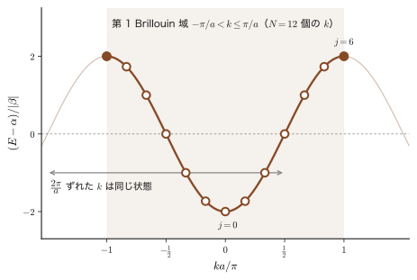
例題41.2 ベンゼンの $\pi$ 軌道は $N=6$ の環
ベンゼン $\mathrm{C_6H_6}$ の 6 個の炭素の $2p_z$ 軌道（分子面に垂直）を，$N=6$ の環の強束縛模型で扱う．(1) 許される $k$ とエネルギー $E_j$ を求めよ．(2) $\pi$ 電子 6 個を詰めたときの全 $\pi$ 電子エネルギーを $\alpha,\beta$ で表せ．
解答 (1) 式 \eqref{eq:41-kquant} で $N=6$ とおくと，$ka=\dfrac{2\pi j}{6}=\dfrac{\pi j}{3}$（$j=0,\pm1,\pm2,3$．$j=3$ と $j=-3$ は同じ状態）．エネルギーは $E_j=\alpha+2\beta\cos\dfrac{\pi j}{3}$ で，$\cos0=1$，$\cos\dfrac{\pi}{3}=\dfrac12$，$\cos\dfrac{2\pi}{3}=-\dfrac12$，$\cos\pi=-1$ より
$$ E_0=\alpha+2\beta,\qquad E_{\pm1}=\alpha+\beta\ (2\text{ 重}),\qquad E_{\pm2}=\alpha-\beta\ (2\text{ 重}),\qquad E_3=\alpha-2\beta . $$合計 6 本の軌道で，$\beta\lt 0$ なので $E_0$ が最低である．(2) 6 個の $\pi$ 電子は，スピンの向きが逆の 2 個ずつを下から詰めるので，$E_0$ に 2 個，$E_{\pm1}$（2 本）に 4 個入る（$E_{\pm1}$ は 2 本とも満たされる）．
$$ E_\pi=2(\alpha+2\beta)+4(\alpha+\beta)=6\alpha+8\beta . $$これは Hückel 法のベンゼンの $\pi$ 電子エネルギー（第40章）と一致する．エチレン $\mathrm{C_2H_4}$ の $\pi$ 結合（$2\alpha+2\beta$）の 3 倍 $6\alpha+6\beta$ と比べて $2|\beta|$ だけ低い．この $2|\beta|$ が，電子が環全体に広がることによる非局在化エネルギーである．
例題41.3 $N=12$ の環の準位と縮退
$N=12$ の環について，許される $k$ の値，エネルギー，縮退度をすべて求め，準位が何本あるかを述べよ．
解答 $ka=\dfrac{2\pi j}{12}=\dfrac{\pi j}{6}$（$j=-5,\dots,6$）．$E_j-\alpha=2\beta\cos\dfrac{\pi j}{6}$ を $\beta$ の単位で書くと，$j=0$：$2$；$j=\pm1$：$\sqrt3=1.732$；$j=\pm2$：$1$；$j=\pm3$：$0$；$j=\pm4$：$-1$；$j=\pm5$：$-1.732$；$j=6$：$-2$．したがって，$j=0$ と $j=6$ は単一（縮退なし），$j=\pm1,\dots,\pm5$ は 2 重縮退で，異なるエネルギーは $2+5=7$ 種，状態の数は $1+1+2\times5=12=N$ である．$\beta\lt 0$ とすると，$E$ は $j=0$ が最低で $j=6$ が最高になる．
41.2.3 重なり積分を無視しない場合
定義41.1 (i) の $S_{mn}=\delta_{mn}$ を外し，隣り合う原子の軌道の重なり積分 $S=\braket{\phi_n}{\phi_{n\pm1}}$ を残すと，分母の計算が変わる．[i] と同じ計算で $\braket{\psi_k}{\psi_k}=N(1+S\,e^{ika}+S\,e^{-ika})=N(1+2S\cos ka)$ となるから，
\begin{equation} E(k)=\frac{\alpha+2\beta\cos ka}{1+2S\cos ka} \label{eq:41-Ek-S} \end{equation}である（$|2S|\lt1$ とする）．$\mathrm{H_2^+}$ の $E=(\alpha\pm\beta)/(1\pm S)$（第39章）の鎖版である．軌道エネルギー $\alpha$ を基準に測ると，$E(k)-\alpha=\dfrac{2\beta'\cos ka}{1+2S\cos ka}$（$\beta'\equiv\beta-\alpha S$）となる．$\beta'\lt0$，$S\gt0$ のとき，結合性の $k=0$ の下がり幅は $\dfrac{2|\beta'|}{1+2S}$，反結合性の $k=\pi/a$ の上がり幅は $\dfrac{2|\beta'|}{1-2S}$ で，重なりがあると，反結合性軌道が押し上げられる幅のほうが，結合性軌道が押し下げられる幅よりも大きい．これは第39章の $\mathrm{H_2^+}$ の結論が，鎖でもそのまま成り立つことを示す（演習41.2）．本章では簡単のため，以後は $S=0$ で議論する．
41.3 $s$ 軌道と $p$ 軌道のバンド — 結合性・反結合性とバンド幅
式 \eqref{eq:41-Ek} は，どの軌道の鎖にも共通の形をしている．しかし，$k=0$ が最低エネルギーになるか最高エネルギーになるかは，原子軌道の種類（$\beta$ の符号）で決まる．それを，Bloch 和の波動関数の符号を目で見て確かめよう．鎖の軸を $x$ 軸とする．
41.3.1 $s$ 軌道の鎖 — 符号が揃えば結合性
$s$ 軌道 $\phi_n$ は原子核のまわりに球対称に広がり，各原子の中心付近で正の値をとる関数にとる．すると，$k=0$ と $k=\pm\pi/a$ の Bloch 和は次のようになる．
\begin{align} k=0:&\qquad \psi_0=\sum_n\phi_n=\cdots+\phi_{n-1}+\phi_n+\phi_{n+1}+\cdots, \label{eq:41-s0}\\ k=\pm\frac{\pi}{a}:&\qquad \psi_{\pi/a}=\sum_n e^{i\pi n}\phi_n=\sum_n(-1)^n\phi_n=\cdots-\phi_{n-1}+\phi_n-\phi_{n+1}+\cdots \label{eq:41-spi} \end{align}（$e^{i\pi n}=(-1)^n$ を使った．$e^{i\pi n}$ も $e^{-i\pi n}$ も同じ値なので，$k=\pi/a$ と $k=-\pi/a$ は同じ状態である．）図41.3 の上の 2 段は，5 個の原子（$n-2,\dots,n+2$）についてこれらの符号を描いたものである．
$k=0$ では，隣り合う原子の軌道が同符号で重なり，原子の間で波動関数が強め合う（節がない）ので，これは結合性軌道である．$k=\pm\pi/a$ では，隣り合う軌道の符号が交互に反転し，すべての原子の間に節ができるので，反結合性軌道である．これは，$\mathrm{H_2^+}$ の $\phi_A+\phi_B$（結合性）と $\phi_A-\phi_B$（反結合性）（第39章 39.3 節）を，$N$ 個の原子の鎖に拡げたものである．結合性軌道は反結合性軌道よりエネルギーが低い（電子が原子核の間に集まって，2 つの核から引力を受ける）ので，
$$ E(0)=\alpha+2\beta\ \lt\ E\!\left(\frac{\pi}{a}\right)=\alpha-2\beta\quad\Longleftrightarrow\quad\beta\lt0 \label{eq:41-sbeta} $$である．すなわち，$s$ 軌道の鎖では $\beta\lt 0$ で，$E(k)=\alpha+2\beta\cos ka$ は $k=0$ で最小，$k=\pm\pi/a$ で最大の U 字型になる．図41.4(a) はその図である．$k=\pm\pi/2a$（隣り合う軌道の位相差が $90^\circ$）では $E=\alpha$ で，原子の軌道エネルギーそのものである．結合性でも反結合性でもない（41.9 節）．
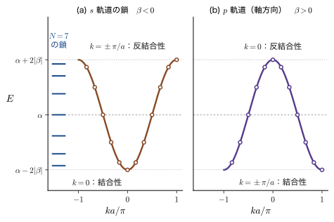
41.3.2 バンド幅と共鳴積分
$k=0$ と $k=\pm\pi/a$ の状態のエネルギー差は，式 \eqref{eq:41-Ek} から，バンドの最低と最高の差であり，
\begin{equation} W\equiv\left|E\!\left(\frac{\pi}{a}\right)-E(0)\right|=|(\alpha-2\beta)-(\alpha+2\beta)|=4|\beta| \label{eq:41-width} \end{equation}である．これをバンド幅（bandwidth）という．$\beta=\mel{\phi_m}{\hat{H}}{\phi_n}$（$m,n$ は隣り合う原子）は，隣り合う原子の軌道のあいだの，エネルギーの相互作用の大きさを表す．2 つの軌道の重なりが大きいほど，電子が原子間を行き来する効果は強く，$|\beta|$ は大きい．したがって，軌道の重なりが大きいほど，バンド幅は大きくなる．固体の中で原子間距離 $a$ を縮める（圧力をかける）とバンドは広がり，$a$ を広げるとバンドは狭くなる．
例題41.4 水素の 1s 軌道の鎖のバンド幅と原子間距離
水素原子の 1s 軌道の 2 中心の重なり積分は，核間距離 $R$（$a_0$ 単位）に対して $S(R)=e^{-R}\bigl(1+R+R^2/3\bigr)$ である（第39章 39.4 節）．(1) $R=2a_0$ と $4a_0$ で $S$ を求め，重なりの変化を述べよ．(2) $|\beta|$ が重なりと同様に $|\beta|\propto e^{-a/a_0}$ で減るとして，原子間距離を $a=2.5\ \text{Å}$ から $3.0\ \text{Å}$ に広げたときのバンド幅の比を求めよ．$a_0=0.529\ \text{Å}$ とする．
解答 (1) $S(2)=e^{-2}\bigl(1+2+\tfrac43\bigr)=0.13534\times4.3333=0.586$，$S(4)=e^{-4}\bigl(1+4+\tfrac{16}{3}\bigr)=0.018316\times10.3333=0.189$．核間距離が 2 倍になると重なりは約 $1/3$ になる．(2) バンド幅は $4|\beta|$ に比例するので，比は $\dfrac{|\beta(3.0)|}{|\beta(2.5)|}=e^{-(3.0-2.5)\,\text{Å}/a_0}=e^{-0.5/0.529}=e^{-0.945}=0.389$ である．原子間距離を 20% 広げるだけで，バンド幅は約 39% に，つまり 6 割以上も狭くなる．
応用：遷移金属の $d$ バンドは $s$ バンドより狭い
3d 軌道は原子核の近くにコンパクトに局在しており，隣の原子の 3d 軌道との重なりが小さい．そのため，遷移金属の $d$ バンドは幅が狭く（$|\beta|$ が小さい），外側に広がった 4s 軌道からできるバンドは広い．狭いバンドでは電子は原子に留まりやすく，磁性や電子相関の効果が強く現れる（$d$ 電子の局在は第VIII部，電子相関と Hubbard の $U$ は第37章 37.6 節と第59章，および姉妹編の固体物理学）．
41.3.3 $p$ 軌道の鎖 — 向かい合うローブの符号が主役
次に，軸方向（$x$ 方向）を向いた $p_x$ 軌道からなる鎖を考える．$p_x$ 軌道は原子核をはさんで，一方のローブが正，他方が負である．各原子の軌道を，すべて同じ向き（$+x$ 側のローブが正，$-x$ 側のローブが負）にとって $\phi_n$ とする．このとき $k=0$ の Bloch 和 $\psi_0=\sum_n\phi_n$ では，どの原子も「$-\ +$」の並びが繰り返され，原子 $n$ の右のローブ（$+$）が，原子 $n+1$ の左のローブ（$-$）と向かい合う．つまり，隣り合う原子の向かい合うローブが逆符号になり，原子の間に節ができる．これは反結合性である（図41.3 の下から 2 段目）．一方 $k=\pm\pi/a$ では，原子ごとに向きが反転し，向かい合うローブが同符号になるので，結合性である（図41.3 の最下段）．したがって，$s$ 軌道とは逆に，
$$ E(0)=\alpha+2\beta\ \gt\ E\!\left(\frac{\pi}{a}\right)=\alpha-2\beta\quad\Longleftrightarrow\quad\beta\gt0 \label{eq:41-pbeta} $$となる．同じ $E(k)=\alpha+2\beta\cos ka$ でも $\beta\gt 0$ なので，バンドは $k=0$ で最大，$k=\pm\pi/a$ で最小の山型になり，$s$ 軌道と上下が逆になる（図41.4(b)）．バンド幅は同じく $4|\beta|$ である．
考察：なぜ $p$ 軌道の鎖では $\beta\gt 0$ になるのか
2 つの軌道の重なり積分 $S=\braket{\phi_n}{\phi_{n+1}}$ と $\beta=\mel{\phi_n}{\hat{H}}{\phi_{n+1}}$ の符号は，多くの場合，逆向きに結びついている．$\hat{H}\phi_{n+1}\approx\alpha\phi_{n+1}$ のようにおおまかに考えると（$\alpha\lt 0$ は原子の軌道エネルギー），$\beta\approx\alpha S$ なので，$S\gt 0$ なら $\beta\lt 0$，$S\lt 0$ なら $\beta\gt 0$ である．$s$ 軌道の鎖は $S\gt 0$ なので $\beta\lt 0$，ここで選んだ向きの $p$ 軌道の鎖は，向かい合うローブが逆符号で $S\lt 0$ なので $\beta\gt 0$ である．ただし $\beta\approx\alpha S$ は，エネルギーの原点を真空準位（電子が原子から無限に離れたときを $0$）にとり，$\alpha\lt0$ とした目安である．原点によらない書き方は 41.2.3 の $\beta'=\beta-\alpha S$ で，$S\gt0$ の $s$ 型の重なりでは $\beta'\lt0$（結合性軌道が $\alpha$ より低い）となる．以下の符号の議論は，$\beta$ を $\beta'$ に読み替えても同じである．
なお，$\beta$ の符号は軌道の位相の約束に依存する．たとえば $p_x$ 軌道の向きを 1 つおきに反転させて $\phi_n$ をとると $\beta$ の符号が変わり，同じバンドが $k$ を $\pi/a$ だけずらして描かれる．どの約束でも，「隣り合う軌道の向かい合う部分が同符号になる状態が結合性」という物理的な内容は変わらない．$p$ 軌道が鎖に垂直な向き（$\pi$ 型，側面で重なる）のときは，向かい合う部分が同符号で $S\gt 0$ となり，$s$ 軌道と同様に $\beta\lt 0$ になる．2 次元・3 次元の格子では $\sigma$ 型と $\pi$ 型が共存する（第42章）．
例題41.5 バンド図から $\beta$ の符号を決める
ある 1 次元鎖の 1 本のバンドが，$E(k)=\alpha+2\beta\cos ka$ の形で，$k=0$ の状態が最高エネルギー，バンド幅が $1.6\ \mathrm{eV}$ だった．$\beta$ の値と符号，および $\alpha=-5.0\ \mathrm{eV}$ のとき，$k=0$，$\pm\pi/2a$，$\pm\pi/a$ のエネルギーを求め，この軌道の種類について何がいえるか述べよ．
解答 バンド幅 $4|\beta|=1.6\ \mathrm{eV}$ より $|\beta|=0.4\ \mathrm{eV}$．$k=0$ が最高なので $E(0)=\alpha+2\beta\gt E(\pi/a)=\alpha-2\beta$，すなわち $\beta\gt 0$ で，$\beta=+0.4\ \mathrm{eV}$ である．$E(0)=-5.0+0.8=-4.2\ \mathrm{eV}$，$E(\pm\pi/2a)=\alpha=-5.0\ \mathrm{eV}$（$\cos\frac{\pi}{2}=0$），$E(\pm\pi/a)=-5.0-0.8=-5.8\ \mathrm{eV}$．$\beta\gt 0$ は，隣り合う軌道の向かい合う部分が，$k=0$ で逆符号になる（重なり積分が負になる）配置，たとえば軸方向の $p$ 軌道（$\sigma$ 型）を同じ向きに並べた鎖に対応する．
41.4 状態密度 — なぜバンドの端に準位が溜まるのか
図41.4(a) の左端に並べた $N=7$ の準位を見直そう．準位は，バンドの上端と下端の近くに密集し，中央（$E=\alpha$）付近では疎である．$k$ は等間隔に並んでいるのに，$E$ は等間隔にならない．これは，1 次元の鎖の重要な特徴である．この節では，これを状態密度という量で定量的に表す．
41.4.1 状態密度の定義
定義41.3 状態密度
エネルギーが $E$ と $E+\mathrm{d}E$ の間にある 1 電子軌道（スピンの向きを区別せずに数える）の数を，原子 1 個あたりで $D(E)\,\mathrm{d}E$ と書き，$D(E)$ を状態密度（density of states，DOS）という．バンドの全軌道数は原子の数 $N$ に等しいので，$\displaystyle\int D(E)\,\mathrm{d}E=1$ である．電子はスピンの向きが 2 通りあるので，1 本のバンドには $2N$ 個の電子が入る．第10章の状態密度 $g(E)$（系全体の値）とは $g(E)=N\,D(E)$ の関係にある．
第10章 10.7 節では，箱の中の自由電子について $k$ 空間の点の数から状態密度を求めた．ここでも同じ方法を使う．環に許される $k$ は間隔 $2\pi/(Na)$ で並ぶので（式 \eqref{eq:41-kquant}），長さ $\mathrm{d}k$ の区間には $\dfrac{Na}{2\pi}\,\mathrm{d}k$ 個の $k$ が入る．
数学の道具：デルタ関数
Dirac のデルタ関数 $\delta(x)$ は，どんな滑らかな関数 $g(x)$ に対しても $\displaystyle\int\delta(x)\,g(x)\,\mathrm{d}x=g(0)$ となる，「$x=0$ だけに幅のない尖りをもつ」関数である（定義と性質は大学数学 第30章 30.3）．$\delta(x-x_0)$ は $g(x_0)$ を取り出す．関数 $f(x)$ の零点 $x_r$（$f(x_r)=0$）の近くでは $f(x)\approx f'(x_r)(x-x_r)$ で，$\delta(cx)=\delta(x)/|c|$ だから，$\delta(f(x))$ は零点ごとに傾き $|f'(x_r)|$ の逆数の重みをつけて，$\delta(f(x))=\displaystyle\sum_r\frac{\delta(x-x_r)}{|f'(x_r)|}$ と分解される．以下の導出で使う．
導出：1 次元の状態密度
$D(E)$ は，原子あたり，各 $k$ を Dirac のデルタ関数 $\delta(E-E_k)$ で数えたものである．$N$ が大きいとき，$k$ の和は積分に置き換えられ（$\sum_k\to\dfrac{Na}{2\pi}\displaystyle\int_{-\pi/a}^{\pi/a}\mathrm{d}k$），
$$ D(E)=\frac1N\sum_k\delta(E-E_k)=\frac{a}{2\pi}\int_{-\pi/a}^{\pi/a}\delta\bigl(E-E(k)\bigr)\,\mathrm{d}k . $$デルタ関数の合成の公式 $\delta(f(k))=\sum_r\delta(k-k_r)/|f'(k_r)|$（$k_r$ は $f(k_r)=0$ の解）を使う．$E(k)=E$ となる $k$ は，$E(k)=E(-k)$ なので $k_r=\pm k_E$ の 2 個で，どちらも $|E'(k_r)|=|E'(k_E)|$ である．よって
\begin{equation} D(E)=\frac{a}{2\pi}\cdot\frac{2}{|E'(k_E)|}=\frac{a}{\pi}\,\frac{1}{|\mathrm{d}E/\mathrm{d}k|} \label{eq:41-dos-general} \end{equation}である．状態密度は，バンドの傾き（あとで見るように，電子の速さに比例する）の逆数に比例する．傾きが小さい（バンドが平らな）ところに，多くの $k$ が同じエネルギー区間に入るのである．$E(k)=\alpha+2\beta\cos ka$ では $\mathrm{d}E/\mathrm{d}k=-2\beta a\sin ka$ なので，
$$ D(E)=\frac{a}{\pi}\cdot\frac{1}{2|\beta|a\,|\sin ka|}=\frac{1}{2\pi|\beta|\,|\sin ka|}. $$$\cos ka=(E-\alpha)/(2\beta)$ から $|\sin ka|=\sqrt{1-\cos^2ka}=\sqrt{1-\dfrac{(E-\alpha)^2}{4\beta^2}}=\dfrac{\sqrt{4\beta^2-(E-\alpha)^2}}{2|\beta|}$ となるから，
\begin{equation} D(E)=\frac{1}{\pi\sqrt{4\beta^2-(E-\alpha)^2}}\qquad(|E-\alpha|\lt2|\beta|) \label{eq:41-dos} \end{equation}を得る．バンドの外（$|E-\alpha|\gt 2|\beta|$）では $D(E)=0$ である．
規格化の確認．$E-\alpha=2|\beta|\sin\varphi$（$-\pi/2\le\varphi\le\pi/2$）とおくと $\mathrm{d}E=2|\beta|\cos\varphi\,\mathrm{d}\varphi$，$\sqrt{4\beta^2-(E-\alpha)^2}=2|\beta|\cos\varphi$ なので，$\displaystyle\int D\,\mathrm{d}E=\frac1\pi\int_{-\pi/2}^{\pi/2}\mathrm{d}\varphi=1$ となり，定義41.3 の規格化と一致する．
（導出終わり）
状態密度はバンドの中央 $E=\alpha$ で最小値 $1/(2\pi|\beta|)$ をとり，バンドの端 $E\to\alpha\pm2|\beta|$ では，$(E-E_{\text{端}})^{-1/2}$ の形で無限大に発散する．たとえば，下端 $E_0=\alpha-2|\beta|$ の近くでは $4\beta^2-(E-\alpha)^2=\bigl(2|\beta|+E-\alpha\bigr)\bigl(2|\beta|-E+\alpha\bigr)\approx4|\beta|(E-E_0)$ なので $D\approx1/\bigl(2\pi\sqrt{|\beta|(E-E_0)}\bigr)$ となる．これは，第10章で求めた 1 次元の自由電子の状態密度 $\propto E^{-1/2}$ と同じ形である．発散していても $\int D\,\mathrm{d}E$ は有限（端 $1/\sqrt{\ }$ の積分は収束）であり，準位が有限個の $N$ 本であることと矛盾しない．このような，バンド内の傾き $\mathrm{d}E/\mathrm{d}k=0$ の点で状態密度が発散したり折れ曲がったりする特異性を，van Hove 特異点という．
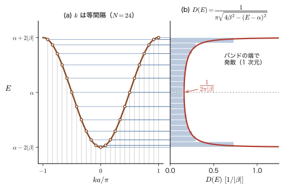
イメージ：バンドの端に準位が溜まる理由
$k$ は等間隔に並ぶが，$E(k)=\alpha+2\beta\cos ka$ は $k=0$ や $k=\pm\pi/a$ で傾きが 0 である．傾きが 0 の付近では，$k$ が少し変わってもエネルギーはほとんど変わらないので，たくさんの $k$ が同じエネルギーの区間に押し込まれる．反対に，中央（$k=\pm\pi/2a$）は傾きが最大なので，$k$ を 1 個進めるとエネルギーが大きく動き，準位は疎になる．図41.5(a) の水平線の密度の変化が，そのまま (b) の $D(E)$ の形になる．
41.4.2 次元による違い
式 \eqref{eq:41-dos-general} の考え方は，2 次元・3 次元にもそのまま拡張される．最近接の相互作用だけの $s$ バンドでは，単純立方格子（3 次元）なら $E(\bm{k})=\alpha+2\beta(\cos k_xa+\cos k_ya+\cos k_za)$ である（2 次元・3 次元は第42章で導く）．図41.6 は，1 次元・2 次元・3 次元の状態密度を，バンドの半幅 $W=z|\beta|$（$z$ は最近接の原子の数）で規格化して比べたものである（ここでは次元による形の違いを先取りして見るだけにとどめ，2 次元・3 次元の導出と van Hove 特異点の分類は第42章 42.4 節，図42.8 で行う）．
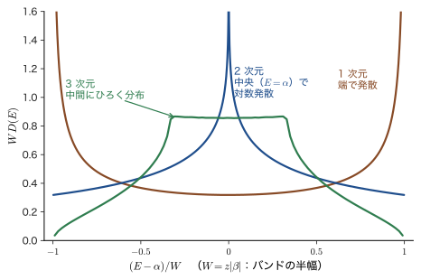
1 次元では準位がバンドの両端に集まる．2 次元では，バンド中央 $E=\alpha$（$\bm{k}=(\pi/a,0)$ の鞍点）で状態密度が対数的に発散する．3 次元では，バンド端で $D\propto\sqrt{E-E_{\text{端}}}$ と $0$ から立ち上がり，バンドの中間付近に高い状態密度が広がる．この違いは，バンド下端付近の自由電子の状態密度 $D\propto E^{(d-2)/2}$（$d$ は次元．1 次元 $E^{-1/2}$，2 次元一定，3 次元 $E^{1/2}$）が，次元ごとに変わることに由来し，第10章 10.7 節と大学基礎物理学 第52章 52.8 の 3 次元の結果 $D\propto\sqrt E$ の格子版である．状態密度は，Fermi 準位付近の値が電気伝導・比熱・磁性を左右する．固体物理学では 第15章で扱い，密度汎関数理論でも第13章で状態密度が主役になる．
例題41.6 バンド幅のわずか 10% の端に，全状態の 2 割が入る
1 次元鎖の $s$ バンドで，上端から幅 $0.4|\beta|$（バンド幅 $4|\beta|$ の 10%）までの範囲に入る状態は，全状態の何 % か．下端についても同様に答え，両端を合わせた割合を求めよ．また，中央の同じ幅 $0.4|\beta|$（$|E-\alpha|\le0.2|\beta|$）には何 % 入るか．
解答 $x=(E-\alpha)/(2|\beta|)$ とおくと，式 \eqref{eq:41-dos} は $D\,\mathrm{d}E=\dfrac{\mathrm{d}x}{\pi\sqrt{1-x^2}}$ である．上端から $0.4|\beta|$ は $x$ の範囲 $0.8\le x\le1$ にあたる．割合は
$$ \frac1\pi\int_{0.8}^{1}\frac{\mathrm{d}x}{\sqrt{1-x^2}}=\frac1\pi\bigl[\arcsin x\bigr]_{0.8}^{1}=\frac{1}{\pi}\bigl(1.5708-0.9273\bigr)=0.2048 . $$下端も同じ割合で，両端の合計は $0.4097$，すなわち約 41% である（両端は合わせて全体の 20% の幅にすぎない）．中央の $|x|\le0.1$ の割合は $\dfrac{2}{\pi}\arcsin0.1=0.0638$ で，約 6.4% である．中央 20% の幅に 6% しかなく，両端 20% の幅に 41% がある．
41.5 LCAO と自由電子論 — $\alpha$，$\beta$ の意味と有効質量
式 \eqref{eq:41-Ek} の $\alpha$ と $\beta$ は，原子軌道のあいだの積分として定義されている．一方，第10章で扱った自由電子の $E(k)$ は，$\hbar$ と電子の質量 $m$ だけで書かれる．この 2 つの理論の結果を比べると，$\alpha$，$\beta$ の値と，結晶の中の電子の「質量」の意味が見えてくる．
41.5.1 2 つの $E(k)$ を比べる
LCAO（強束縛）法による単一原子鎖のエネルギーは，
\begin{equation} E(k)=\alpha+2\beta\cos ka \label{eq:41-A} \end{equation}である（これを式 Ⓐ とよぶ）．一方，力を受けずに一定のポテンシャル $V_0$ の中を自由に動く電子（自由電子）のエネルギーは，運動量 $p=\hbar k$ を使って，
\begin{equation} E(k)=\frac{p^2}{2m}+V_0=\frac{\hbar^2}{2m}k^2+V_0 \label{eq:41-B} \end{equation}である（式 Ⓑ）．$k$ は波数，$m$ は電子の質量で，運動エネルギーが $k^2$ に比例する放物線になる．Ⓑ は連続な空間を動く電子の分散で，Ⓐ は原子の位置に電子が局在した軌道からのバンドである．全く別の出発点だが，バンドの底（$k=0$）の近くでは，電子は原子の位置を意識せず，ほとんど自由に動く波と見なせるはずである．そこで，$|ka|\ll1$ で Ⓐ を展開して Ⓑ と比べる．$\cos x\approx1-\dfrac{x^2}{2!}$（大学数学 第4章 4.2 の Taylor 展開）で $x=ka$ とおくと，
$$ E(k)\approx\alpha+2\beta\Bigl(1-\frac{a^2k^2}{2}\Bigr)=\alpha+2\beta-a^2\beta\,k^2 . $$これが Ⓑ と等しいとおくと，
$$ \alpha+2\beta-a^2\beta\,k^2=V_0+\frac{\hbar^2}{2m}k^2 . $$この等式が，小さい $k$ の範囲で（つまり $k$ の値によらずに）成り立つためには，$k^0$ の項どうしと $k^2$ の項どうしがそれぞれ等しくなければならない（$k$ についての恒等式とみなす）．
\begin{equation} \begin{cases} V_0=\alpha+2\beta\\[1mm] \dfrac{\hbar^2}{2m}=-a^2\beta \end{cases}\qquad\Longrightarrow\qquad \begin{cases} \alpha=V_0+\dfrac{\hbar^2}{ma^2}\\[2mm] \beta=-\dfrac{\hbar^2}{2ma^2} \end{cases} \label{eq:41-match} \end{equation}である（2 つ目の式から $\beta$ を求め，$\alpha=V_0-2\beta$ に代入した）．$\hbar^2/(2ma^2)\gt 0$ なので $\beta\lt 0$ が得られる．これは，$s$ 軌道の鎖で $\beta\lt 0$ とした 41.3 節の結論と整合する．なお，この対応は，バンドの底で電子が質量 $m$ の自由電子のように振る舞うと仮定して，$\alpha$，$\beta$ の大きさの目安を得るためのものである．$V_0$ は原子の間の平らなポテンシャルの高さで，実際の結晶では $m$ を有効質量 $m^*$ に置き換える（41.5.4）．図41.7 は，バンドの底の近くで 2 つの $E(k)$ が一致すること，$ka$ が大きくなると LCAO のバンドは放物線から離れて頭打ちになる（バンドが有限の幅 $4|\beta|$ をもつ）ことを示す．
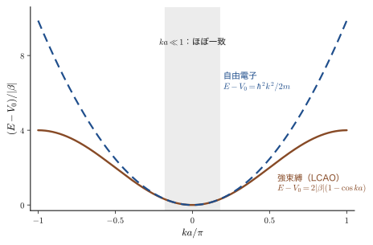
イメージ：$\alpha$ と $\beta$ の大きさは，電子をどれだけ狭い所に閉じ込めたかで決まる
式 \eqref{eq:41-match} から，$\alpha-V_0=2|\beta|=\hbar^2/(ma^2)$ である．この量は，電子を長さ $a$ ほどの領域に閉じ込めたときの運動エネルギー（不確定性原理から $\Delta p\sim\hbar/a$ なので，$(\Delta p)^2/m\sim\hbar^2/(ma^2)$）の大きさである．原子間距離 $a$ が小さいほど，電子が原子軌道に閉じ込められる度合いは強く，軌道エネルギー $\alpha$ は上がり，同時に隣の原子との相互作用 $|\beta|$ も大きくなる．$a$ が大きければ，反対に $\alpha$ の上昇も $|\beta|$ も小さくなる．
41.5.2 $\alpha$，$\beta$ の物理的な意味
式 \eqref{eq:41-match} の対応を見ると，$\alpha$ と $\beta$ の意味がはっきりする．定義41.1 を 1 次元の積分の形に書くと（3 次元では $\int\dd x$ が $\int\dd^3r$ になる），
$$ \alpha=\int\phi_n^*\,\hat{H}\,\phi_n\,\mathrm{d}x,\qquad\beta=\int\phi_m^*\,\hat{H}\,\phi_n\,\mathrm{d}x\quad(m=n\pm1) . $$$\alpha$ は，「電子が $n$ 番目の原子の軌道 $\phi_n$ にいるときの，電子の力学的エネルギー（運動エネルギー $+$ ポテンシャルエネルギー）の平均値」である．$\beta$ は，「$n$ 番目の原子と $m$ 番目の原子のあいだの電子のエネルギーの相互作用の度合い」，すなわち電子が原子から原子へ乗り移る（ホッピングする）ことのしやすさを表す量である．原子間距離 $a$ を小さくすると，電子の力学的エネルギー $\alpha$ は大きく（$\alpha=V_0+\hbar^2/ma^2$），隣り合う原子とのエネルギー相互作用 $|\beta|$ も大きくなる（$|\beta|=\hbar^2/2ma^2$）．
例題41.7 $\beta$ は電子が乗り移る速さを決める
2 個の原子だけの系（$N=2$，$\alpha,\beta$ は定義41.1）で，時刻 $t=0$ に電子が原子 1 の軌道にいた．電子が原子 2 にいる確率 $P_2(t)$ を求めよ．$|\beta|=1\ \mathrm{eV}$ のとき，電子が完全に原子 2 に移るまでの最短の時間と，往復の周期を求めよ．$\hbar=6.582\times10^{-16}\ \mathrm{eV\,s}$ とする．
解答 固有状態は $\dfrac{1}{\sqrt2}(\phi_1\pm\phi_2)$，エネルギーは $E_\pm=\alpha\pm\beta$ である．$t=0$ の状態 $\phi_1=\dfrac{1}{\sqrt2}\bigl[\tfrac{1}{\sqrt2}(\phi_1+\phi_2)+\tfrac{1}{\sqrt2}(\phi_1-\phi_2)\bigr]$ を展開して，各固有状態に $e^{-iE_\pm t/\hbar}$ をかけると，
$$ \Psi(t)=\tfrac12\bigl[e^{-i(\alpha+\beta)t/\hbar}(\phi_1+\phi_2)+e^{-i(\alpha-\beta)t/\hbar}(\phi_1-\phi_2)\bigr] =e^{-i\alpha t/\hbar}\Bigl[\cos\frac{\beta t}{\hbar}\,\phi_1-i\sin\frac{\beta t}{\hbar}\,\phi_2\Bigr] . $$（$\cos x=\tfrac12(e^{ix}+e^{-ix})$，$\sin x=\tfrac{1}{2i}(e^{ix}-e^{-ix})$ を使った．）よって原子 2 にいる確率は $P_2(t)=\sin^2(\beta t/\hbar)$ で，$P_2=1$ になるのは $|\beta|t/\hbar=\pi/2$，すなわち最短で $t=\dfrac{\pi\hbar}{2|\beta|}$，往復の周期は $\dfrac{\pi\hbar}{|\beta|}$ である．$|\beta|=1\ \mathrm{eV}$ なら $\hbar/|\beta|=0.658\ \mathrm{fs}$（$1\ \mathrm{fs}=10^{-15}\ \mathrm{s}$）で，最短時間は $\dfrac{\pi}{2}\times0.658=1.03\ \mathrm{fs}$，周期は $2.07\ \mathrm{fs}$ である．$|\beta|$ が大きいほど電子は速く乗り移る．
41.5.3 群速度と有効質量
結晶の中の電子は，波数 $k$ の Bloch 波を重ね合わせて作った波束で表される．波束（波の束）の動く速さは群速度で，角振動数 $\omega$ と波数 $k$ の関係（分散関係）から，$v_g=\mathrm{d}\omega/\mathrm{d}k$ で与えられる（大学基礎物理学 第17章 17.5．41.8 節で詳しく見る）．電子のエネルギーは $E=\hbar\omega$ なので，バンド内の電子の平均の速度は，
\begin{equation} v=\frac{1}{\hbar}\frac{\mathrm{d}E}{\mathrm{d}k}\qquad\Bigl(=\frac{\mathrm{d}\omega}{\mathrm{d}k}=\frac{1}{\hbar}\frac{\mathrm{d}(\hbar\omega)}{\mathrm{d}k}\Bigr) \label{eq:41-vg} \end{equation}である．たとえば自由電子の式 Ⓑ からは $v=\dfrac{1}{\hbar}\dfrac{\hbar^2k}{m}=\dfrac{\hbar k}{m}=\dfrac{p}{m}$ となって，古典力学の $v=p/m$ と一致する．
次に，電子に外力 $F$（たとえば，電場から受ける力 $F=-e_0E_x$．電子の電荷は $-e_0$ で，本章では電場を $\bm{E}$，その $x$ 成分を $E_x$ と書く．エネルギー $E(k)$ とは別の量である）がはたらいたときの加速度を求める．
導出：有効質量
[i] $k$ の時間変化．微小時間 $\mathrm{d}t$ の間に電子は $v\,\mathrm{d}t$ だけ動くので，外力がする仕事は $F\,v\,\mathrm{d}t$ である．この仕事だけ電子のエネルギーが増えるので，$\mathrm{d}E=F\,v\,\mathrm{d}t$．一方，バンドの上でエネルギーが増えることは，波数が $\mathrm{d}k$ 変わることでもあり，$\mathrm{d}E=\dfrac{\mathrm{d}E}{\mathrm{d}k}\mathrm{d}k=\hbar v\,\mathrm{d}k$（式 \eqref{eq:41-vg} を使った）．両者を等しいとおくと $F\,v\,\mathrm{d}t=\hbar v\,\mathrm{d}k$，すなわち
\begin{equation} F=\hbar\frac{\mathrm{d}k}{\mathrm{d}t}\qquad\Bigl(\text{自由電子では }F=\frac{\mathrm{d}p}{\mathrm{d}t}\Bigr) \label{eq:41-force} \end{equation}を得る．（自由電子では $p=\hbar k$ なので，これは Newton の運動方程式 $F=\dd p/\dd t$ と同じ形である．結晶の中でこの関係が成り立つ理由は，固体物理学 第17章 17.2 で詳しく導く．）
[ii] 速度の時間変化．式 \eqref{eq:41-vg} を時間で微分する．合成関数の微分則 $\dfrac{\mathrm{d}}{\mathrm{d}t}=\dfrac{\mathrm{d}k}{\mathrm{d}t}\dfrac{\mathrm{d}}{\mathrm{d}k}$ を使うと，
$$ \frac{\mathrm{d}v}{\mathrm{d}t}=\frac{1}{\hbar}\frac{\mathrm{d}}{\mathrm{d}t}\Bigl(\frac{\mathrm{d}E}{\mathrm{d}k}\Bigr)=\frac{1}{\hbar}\frac{\mathrm{d}^2E}{\mathrm{d}k^2}\,\frac{\mathrm{d}k}{\mathrm{d}t}. $$[iii] 代入．式 \eqref{eq:41-force} から $\mathrm{d}k/\mathrm{d}t=F/\hbar$ を代入して，
$$ \frac{\mathrm{d}v}{\mathrm{d}t}=\frac{1}{\hbar^2}\frac{\mathrm{d}^2E}{\mathrm{d}k^2}\,F\qquad\Longleftrightarrow\qquad \underbrace{\hbar^2\,\frac{1}{\mathrm{d}^2E/\mathrm{d}k^2}}_{m^*}\;\frac{\mathrm{d}v}{\mathrm{d}t}=F . $$これは Newton の運動方程式 $m\,\mathrm{d}v/\mathrm{d}t=F$ と同じ形で，質量 $m$ を下の $m^*$ で置き換えたものである．
（導出終わり）
バンドの中の電子は，力を受けたときに，質量 $m^*$ の粒子のように加速される．この $m^*$ を有効質量（effective mass）という．真空中の電子の質量 $m_{\mathrm e}$ と違い，$m^*$ は結晶の周期ポテンシャルの効果を全部取り込んだ値で，バンド図の曲がり具合（曲率 $\mathrm{d}^2E/\mathrm{d}k^2$）で決まる．曲率が大きい（バンドが急に曲がっている）ほど $m^*$ は小さく，軽い．式 Ⓐ に適用すると，$\mathrm{d}^2E/\mathrm{d}k^2=-2\beta a^2\cos ka$ なので，
\begin{equation} m^*(k)=-\frac{\hbar^2}{2\beta a^2\cos ka} \label{eq:41-mstar-cos} \end{equation}となる．バンドの底 $k=0$ では，式 \eqref{eq:41-match} の $\beta=-\hbar^2/(2ma^2)$ を代入すると $m^*=\hbar^2/(2|\beta|a^2)=m$ となる．これは式 \eqref{eq:41-match} が「底で質量 $m$」という仮定から出た対応であることの確認である．
注意：$\hbar k$ は結晶運動量．運動量そのものではない
式 \eqref{eq:41-force} の $\hbar k$ を，結晶運動量（crystal momentum）という．結晶の中では，電子は外力だけでなく原子核（格子）からも力を受けており，電子の運動量 $\hat{p}$ の期待値は $\hbar k$ とは一般に異なる（Bloch 和は $\hat{p}$ の固有状態ではない）．式 \eqref{eq:41-force} が示すのは，「外力による $\hbar k$ の変化」が，格子の力の複雑さと無関係に決まるという，簡潔な関係である．格子からの力は，バンド構造 $E(k)$ のなかに全部入っている．
41.5.4 有効質量と $\beta$，原子間距離
バンドの底（$k=0$）での有効質量を，共鳴積分 $\beta$ の言葉で書くと，式 \eqref{eq:41-mstar-cos} から，
$$ \beta=-\frac{\hbar^2}{2m^*a^2},\qquad m^*=-\frac{\hbar^2}{2a^2\beta}=\frac{\hbar^2}{2a^2|\beta|} $$である．隣接原子とのエネルギー相互作用 $|\beta|$ が大きいと，有効質量 $m^*$ は小さく，同時にバンド幅 $4|\beta|$ は大きい．つまり，バンド幅が広いほど電子の質量は軽く，動きやすい．また，$\beta$ が同じならば，原子間距離 $a$ が大きいほど $m^*=\hbar^2/(2a^2|\beta|)$ は小さい．
注意：$|\beta|$ が $a$ とともに減ることも考える
上の「$a$ が大きいほど $m^*$ は小さい」は，$|\beta|$ を一定にしたときの読み方である．現実の原子では，$a$ が大きくなると軌道の重なりが急激に減るため $|\beta|$ も小さくなる（例題41.4）．$|\beta|\propto e^{-a/a_0}$ とすると，$m^*\propto e^{a/a_0}/a^2$ で，微分して $\bigl(1/a_0-2/a\bigr)e^{a/a_0}/a^2=0$ から $a=2a_0$ で最小になり，それより大きい $a$ では $m^*$ は増加する．たとえば $a=4a_0$ の $m^*$ は $a=2a_0$ のそれの $e^2/4=1.85$ 倍，$a=6a_0$ では $e^4/9=6.1$ 倍である．結晶の原子間距離は普通 $a\gtrsim4a_0$ なので，実際の物質では，原子間距離が大きい（軌道の重なりが小さい）ほど有効質量は大きい（電子は動きにくい）．
例題41.8 原子間距離 $2.5\ \text{Å}$ の鎖の $\beta$ と有効質量
$s$ バンドが，電子の質量 $m_{\mathrm e}$ の自由電子と，バンドの底の付近で一致するような，$a=2.5\ \text{Å}$ の鎖の $\beta$，バンド幅 $4|\beta|$，$\alpha-V_0$ を求めよ．また，同じ $a$ で $|\beta|=1\ \mathrm{eV}$ のとき，バンドの底の有効質量は $m_{\mathrm e}$ の何倍か．$\hbar^2/m_{\mathrm e}=7.620\ \mathrm{eV\,\text{Å}^2}$ を使ってよい．
解答 式 \eqref{eq:41-match} で $m=m_{\mathrm e}$ とおくと，$|\beta|=\dfrac{\hbar^2}{2m_{\mathrm e}a^2}=\dfrac{7.620\ \mathrm{eV\,\text{Å}^2}}{2\times(2.5\ \text{Å})^2}=\dfrac{7.620}{12.5}\ \mathrm{eV}=0.610\ \mathrm{eV}$．よって $\beta=-0.61\ \mathrm{eV}$，バンド幅 $4|\beta|=2.44\ \mathrm{eV}$，$\alpha-V_0=2|\beta|=1.22\ \mathrm{eV}$ である．次に $|\beta|=1\ \mathrm{eV}$ のとき，$\dfrac{m^*}{m_{\mathrm e}}=\dfrac{\hbar^2}{m_{\mathrm e}}\cdot\dfrac{1}{2a^2|\beta|}=\dfrac{7.620}{2\times6.25\times1}=0.610$．$|\beta|$ が大きい（$0.61\ \mathrm{eV}$ より大きい）ので，$m^*\lt m_{\mathrm e}$ で，電子は自由電子より軽い．この場合のバンド幅は $4\ \mathrm{eV}$ で，自由電子の場合の $2.44\ \mathrm{eV}$ より広い．
41.6 曲率が質量を決める — 電子と正孔
有効質量の式 \eqref{eq:41-mstar} は，$m^*$ の大きさだけでなく符号も，バンド図の曲がり方（曲率）で決まることを示す．この節では，$m^*\lt 0$ とは何を意味するか，そして，それが「正孔」という電流の担い手とどう関係するかを考える．
41.6.1 曲率と有効質量の符号
バンド図のエネルギー曲線 $E(k)$ が下に凸（谷の形）なら $\mathrm{d}^2E/\mathrm{d}k^2\gt 0$ で $m^*\gt 0$，上に凸（山の形）なら $\mathrm{d}^2E/\mathrm{d}k^2\lt 0$ で $m^*\lt 0$ である．$s$ バンドの式 \eqref{eq:41-mstar-cos} を，$\beta=-|\beta|$，$m_0\equiv\hbar^2/(2|\beta|a^2)$（バンドの底での質量）を使って書き直すと，
\begin{equation} m^*(k)=\frac{m_0}{\cos ka} \label{eq:41-mstar-k} \end{equation}である．バンドの下半分（$|k|\lt \pi/2a$）は $m^*\gt 0$ で，$k=0$ の底で質量が最小の $m_0$，$|k|\to\pi/2a$ に近づくと $m^*\to+\infty$ になる．上半分（$\pi/2a\lt |k|\le\pi/a$）は $m^*\lt 0$ で，$|k|\to\pi/2a$ で $m^*\to-\infty$，$k=\pm\pi/a$ で $m^*=-m_0$ である．変曲点 $k=\pm\pi/2a$ で $m^*$ は符号を変え，$\pm\infty$ になる．図41.8 は $E(k)$，速度 $v(k)$，$m^*(k)$ の 3 つを並べたものである．
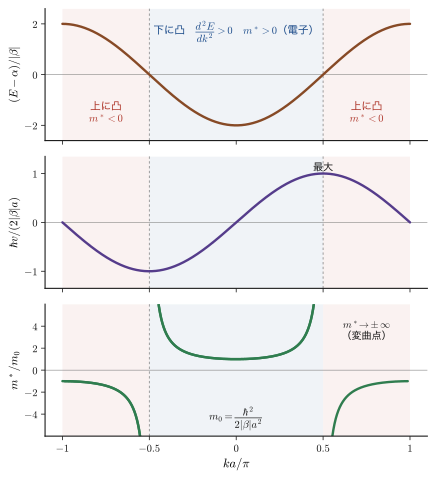
イメージ：$m^*\lt 0$ は，力を受けて減速すること
$m^*\lt 0$ の状態（上に凸の部分）の電子に，$+x$ 向きの力 $F\gt 0$ を加えると，式 \eqref{eq:41-force} により $k$ は増える．ところが，そこでは $k$ が増えるほど $E(k)$ の傾き，すなわち速度 $v=\hbar^{-1}\mathrm{d}E/\mathrm{d}k$ が減る．結果として，電子は力の向きに減速する（加速度が力と逆向きになる）．これは，格子が電子に及ぼす力（Bragg（ブラッグ）反射）が，外力を上回っている状況である．バンドの上端 $k=\pm\pi/a$ では $v=0$ で，波は格子に反射されて定在波になっている（41.9 節）．
例題41.9 $s$ バンドの $m^*(k)$ と最大速度
$a=2.5\ \text{Å}$，$|\beta|=1\ \mathrm{eV}$ の $s$ バンドについて，$m_0/m_{\mathrm e}$，$ka=\pi/3$ と $2\pi/3$ での $m^*/m_{\mathrm e}$，$ka=\pi/2\mp0.05$ での $m^*/m_{\mathrm e}$，および最大速度 $v_{\max}$ を求めよ．$\hbar=1.0546\times10^{-34}\ \mathrm{J\,s}$，$e_0=1.6022\times10^{-19}\ \mathrm{C}$ とする．
解答 例題41.8 より $m_0=\dfrac{\hbar^2}{2|\beta|a^2}=0.610\,m_{\mathrm e}$．式 \eqref{eq:41-mstar-k} より，$ka=\pi/3$ では $m^*=\dfrac{0.610}{\cos(\pi/3)}m_{\mathrm e}=1.22\,m_{\mathrm e}$，$ka=2\pi/3$ では $\cos\dfrac{2\pi}{3}=-\dfrac12$ より $m^*=-1.22\,m_{\mathrm e}$（符号が逆）．$ka=\pi/2-0.05$ では $\cos=\sin0.05=0.04998$ なので $m^*=+12.2\,m_{\mathrm e}$，$ka=\pi/2+0.05$ では $\cos=-0.04998$ で $m^*=-12.2\,m_{\mathrm e}$．変曲点をはさんで符号が入れ替わり，質量の大きさは非常に大きくなる．速度は $v=\hbar^{-1}\mathrm{d}E/\mathrm{d}k=\dfrac{2|\beta|a}{\hbar}\sin ka$ なので，最大値は $ka=\pi/2$ での
$$ v_{\max}=\frac{2|\beta|a}{\hbar}=\frac{2\times1.6022\times10^{-19}\ \mathrm{J}\times2.5\times10^{-10}\ \mathrm{m}}{1.0546\times10^{-34}\ \mathrm{J\,s}}=7.6\times10^{5}\ \mathrm{m/s} $$である．これは光速の約 $0.25\%$ で，金属の Fermi 速度（$10^6\ \mathrm{m/s}$ 程度）と同じ桁である．
41.6.2 正孔 — 満ちたバンドの空席
$m^*\lt 0$ の状態は，実際にどのように電流に寄与するだろうか．そのために，まず満ちたバンドは電流を運ばないことを示す．第 1 Brillouin 域の全 $k$ について速度を足すと，$k$ の和を積分に置き換えて（$L=Na$ は鎖の長さ），
$$ \sum_kv_k=\frac{1}{\hbar}\sum_k\frac{\mathrm{d}E}{\mathrm{d}k}\ \to\ \frac{L}{2\pi\hbar}\int_{-\pi/a}^{\pi/a}\frac{\mathrm{d}E}{\mathrm{d}k}\,\mathrm{d}k=\frac{L}{2\pi\hbar}\Bigl[E\Bigl(\frac{\pi}{a}\Bigr)-E\Bigl(-\frac{\pi}{a}\Bigr)\Bigr]=0 $$となる（$E(k)$ は周期 $2\pi/a$ の周期関数なので，上端と下端の値が等しい）．すべての状態が占有されたバンドでは，速度の総和が 0 で，電流が 0 である．では，1 個の状態 $k_h$ だけが空になったバンドはどうか．電子は全部で $\sum_{k\ne k_h}v_k=0-v(k_h)=-v(k_h)$ の速度をもつ．鎖の 1 点を，速度 $v$ の電子は毎秒 $v/L$ 回通過するので，電流は
\begin{equation} I=-\frac{e_0}{L}\sum_{k\ne k_h}v_k=+\frac{e_0}{L}\,v(k_h) \label{eq:41-hole-current} \end{equation}となり，電荷 $+e_0$ の粒子が速度 $v(k_h)$ で動いているのと同じ電流になる．次に運動を調べる．外力（電場 $E_x$ による力 $-e_0E_x$）を加えると，満ちているどの電子の $k$ も式 \eqref{eq:41-force} $\hbar\dot{k}=-e_0E_x$ で同じように動くから，空席 $k_h$ も同じ割合で動く．空席の速度 $v_h=v(k_h)$ の時間変化は，式 \eqref{eq:41-mstar} を導いたときと同じ計算で，
$$ \frac{\mathrm{d}v_h}{\mathrm{d}t}=\frac{1}{\hbar}\frac{\mathrm{d}^2E}{\mathrm{d}k^2}\Bigr|_{k_h}\dot{k}_h=\frac{1}{m^*(k_h)}\,(-e_0E_x)=\frac{+e_0E_x}{-m^*(k_h)} $$である．$m^*(k_h)\lt 0$ なら $-m^*(k_h)\gt 0$ で，これは，電荷 $+e_0$，質量 $-m^*(k_h)\gt 0$ の粒子が，電場から力 $+e_0E_x$ を受けたときの運動方程式である．このように，ほとんど満ちたバンドの上に凸の部分の空席は，正の電荷 $+e_0$ と正の質量 $|m^*|$ をもつ粒子として振る舞う．これを正孔（hole，ホール）という（固体物理学 第17章 17.3，17.4）．
定義41.4 正孔（hole）
ほとんど電子で満ちたバンドの，上に凸の部分（$m^*\lt 0$）の空席を正孔という．波数 $k_h$ の空席は，電荷 $+e_0$，質量 $-m^*(k_h)\gt 0$，速度 $v(k_h)$ の粒子として振る舞う．
考察：$m^*\lt 0$ の点には正孔があるのか
図41.9 の点 b（下のバンドの，上に凸の部分）は $m^*\lt 0$ である．そこには正孔があるのだろうか．下の 2 本の帯は電子で満ちている（図41.9 の左．中の帯に付けた「本当に空にならないのか？」という問いは，点 b と点 e についての同じ問いである）はずで，正孔の入る余地はない．答えは次のとおりである．$m^*\lt 0$ であることと，正孔が存在することは別のことである．$m^*\lt 0$ は，「その状態にいる電子が，力の向きとは逆に加速される」という状態の性質を表す．その状態が電子で占有されていれば，そこにあるのは質量が負の電子であって，正孔ではない．満ちたバンドでは，そのような電子の寄与を全部足すと 0 になる．正孔は，$m^*\lt 0$ の状態が空になったときに現れる，「空席」という粒子の見方である．半導体の価電子帯の上端付近で，熱励起や光励起により電子が伝導帯へ移ると，価電子帯の上端に空席（正孔）ができ，電流を運ぶ．
41.6.3 3 本のバンドと点 a〜f
2 本以上のバンドが並ぶ一般の場合を見よう．自由電子の放物線（図41.9 の点線．周期 $2\pi/a$ でたたみ込んだもの）は，$k=0$ や $k=\pm\pi/a$ で交差する．格子の周期ポテンシャルがあると，交差点（縮退点）では，周期ポテンシャルの Fourier 成分 $U_G$（$G$ は 2 つの平面波の波数の差）が 2 つの平面波を混ぜ，エネルギーが $\pm|U_G|$ ずつ分裂してギャップ $2|U_G|$ が開く．その結果，実線の 3 本のバンドになる（周期ポテンシャルが弱い場合の「ほとんど自由な電子」の近似は固体物理学 第16章 16.1）．図41.9 は，ギャップが見やすいように強めの周期ポテンシャルを用いた定性的な描画である．周期ポテンシャルの Fourier 成分は，波数差 $2\pi/a$ の成分を $E_\pi$ の 1.5 倍，波数差 $4\pi/a$ の成分を $E_\pi$ の 0.6 倍とし（$E_\pi=\hbar^2\pi^2/(2ma^2)$：自由電子の $k=\pi/a$ でのエネルギー），平面波 9 個の行列を対角化して描いた．
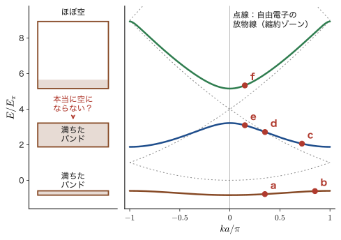
| 点 | バンド | $m^*$ の符号 | $m^*/m$ | 大きさ | 状態の性質 |
|---|---|---|---|---|---|
| a | 下 | $+$ | $+3.2$ | すごく大 | 電子（$\mathrm{e^-}$），重い |
| b | 下 | $-$ | $-1.7$ | かなり大 | 空なら正孔（$\mathrm{h^+}$）．満ちていれば負質量の電子 |
| c | 中 | $+$ | $+0.53$ | 少し大 | 電子（$\mathrm{e^-}$） |
| d | 中 | $\pm\infty$ | 変曲点 | すごく大 | $\mathrm{d}^2E/\mathrm{d}k^2=0$．符号が入れ替わる |
| e | 中 | $-$ | $-0.30$ | 中 | 空なら正孔（$\mathrm{h^+}$）．満ちていれば負質量の電子 |
| f | 上 | $+$ | $+0.17$ | すごく小 | 電子（$\mathrm{e^-}$）．軽い |
点の位置は，$ka/\pi=0.35$（a），$0.85$（b），$0.72$（c），$0.351$（d．中のバンドの変曲点），$0.15$（e，f）である．表41.2 のとおり，下のバンドは狭く，曲率が小さい（重い）．上のバンドは広く，曲率が大きい（軽い）．$|m^*|$ は a，b，c，e，f の順に小さくなる．$m^*\gt 0$ の点（a，c，f）は電子の状態，$m^*\lt 0$ の点（b，e）は，占有されていれば負質量の電子，空になれば正孔である．d は $\mathrm{d}^2E/\mathrm{d}k^2=0$ の変曲点で，符号が入れ替わる境目である．中のバンドが電子で満ちている（価電子帯）とすると，e は価電子帯の上端で，そこから電子が上のバンドの f（伝導帯の底）に励起されると，e に空席ができて正孔として振る舞う．
例題41.10 満ちた $s$ バンドの空席が運ぶ電流
$N=12$ の環，$\beta=-|\beta|$ の $s$ バンドが，すべて電子で満ちている．$k=2\pi j/(Na)$ の状態の速度は $v_j=(2|\beta|a/\hbar)\sin(2\pi j/12)$（$j=-5,\dots,6$）である．(1) 全 12 状態の速度の和が 0 になることを確かめよ．(2) $j=4$ の状態だけが空のとき，残りの電子の速度の総和は何か．$|\beta|=1\ \mathrm{eV}$，$a=2.5\ \text{Å}$ で，空席の速さを求めよ．また，$j=4$ の状態の有効質量の符号は何か．
解答 (1) $\displaystyle\sum_{j=-5}^{6}\sin\frac{2\pi j}{12}=\sin\pi+\sum_{j=1}^{5}\Bigl[\sin\frac{2\pi j}{12}+\sin\frac{-2\pi j}{12}\Bigr]=0+0=0$（$j$ と $-j$ が打ち消し合い，$j=0$ と $j=6$ は $\sin0=\sin\pi=0$）．(2) $j=4$ が空なら，残りの電子の速度の総和は，全部の和 $0$ から $v_4$ を引いた $-v_4$ である．$v_4=\dfrac{2|\beta|a}{\hbar}\sin\dfrac{2\pi}{3}=0.866\times7.60\times10^5\ \mathrm{m/s}=6.6\times10^{5}\ \mathrm{m/s}$．電子の電荷は $-e_0$ なので，電流は $-e_0\times(-v_4)/L=+e_0v_4/L$ で，正電荷 $+e_0$ が速度 $+6.6\times10^5\ \mathrm{m/s}$ で動いているのと同じである．$k_4a=2\pi/3\gt \pi/2$ なので $m^*(k_4)=m_0/\cos(2\pi/3)=-2m_0\lt 0$ で，$m_0=0.61\,m_{\mathrm e}$ なら $-1.22\,m_{\mathrm e}$ である．空席は，正の質量 $2m_0=1.22\,m_{\mathrm e}$ の正孔として動く．
41.7 半導体の有効質量・移動度の実例
有効質量は，バンド計算だけでなく，サイクロトロン共鳴や光学・輸送の測定から実験的に決められる．表41.3 は，主な半導体のバンドギャップ，電子と正孔の有効質量，移動度を室温（300 K）の値でまとめたものである．有効質量は自由電子の質量 $m_{\mathrm e}$ を単位とし，移動度（mobility）$\mu$ は，電場 $E_x$ の中を電子や正孔が動くときのドリフト速度の大きさ $|v_{\mathrm d}|=\mu|E_x|$ の比例係数（$\mu\gt0$）で，単位は $\mathrm{cm^2\,V^{-1}\,s^{-1}}$ である．
| 族 | 結晶 | $E_{\mathrm g}$ / eV | $m_{\mathrm e}^*$ | $m_{\mathrm h}^*$ | $\mu_{\mathrm e}$ | $\mu_{\mathrm h}$ |
|---|---|---|---|---|---|---|
| IV | Si | 1.12（間接） | 0.98 / 0.19 | 0.52 | 1350 | 480 |
| Ge | 0.67 | 1.58 / 0.08 | 0.3 | 3900 | 1900 | |
| C（ダイヤモンド） | 5.47 | — | — | 1800 | 1600 | |
| VI | Se | 1.74 | 0.6 | 2.7 | 2 | 0.1 |
| Te | 0.32 | 0.104 (a) / 0.07 (c) | 0.109 (a) / 0.290 (c) | 2430 | 1320 | |
| III–V | GaN | 3.39 | 0.19 | 0.6 | 900 | 400 |
| GaP | 2.25 | 0.13 | 0.54 / 0.16 | 300 | 120 | |
| GaAs | 1.43 | 0.07 | 0.5 / 0.09 | 6000 | 400 | |
| GaSb | 0.69 | 0.048 | 0.32 / 0.05 | 約 4000 | 約 650 | |
| InP | 1.35 | 0.08 | 0.56 / 0.12 | 約 4000 | 約 650 | |
| II–VI | CdS | 2.53 | 0.153 (a) / 0.171 (c) | 0.7 (a) / 5 (c) | 210 | — |
| CdSe | 1.74 | 0.13 | 0.4 (a) / 2.5 (c) | 500 | — | |
| CdTe | 1.5 | 0.096 | 0.98 / 0.09 | 600 | — |
表の見方．出典は日本化学会編『化学便覧 応用化学編』第 7 版（丸善）第19章である．有効質量の「/」は 2 つの値の区切りである．電子については，Si，Ge は縦質量 $m_l$ / 横質量 $m_t$（下で説明する）．正孔については重い正孔 / 軽い正孔．Te，CdS，CdSe では，「/」の前後は結晶の $a$ 軸方向の値（(a)）と $c$ 軸方向の値（(c)）である．「—」は資料に値がないもの．有効質量や移動度の値は，温度・純度・測定法，質量の定義（状態密度質量か伝導質量か）で，資料により異なる．たとえば，GaAs の電子移動度を 8000 以上，InP の正孔移動度を 650 よりかなり小さい値（約 200 以下）とする資料もあり，GaSb の移動度も，電子が約 3000 以下，正孔が約 1000 以下とする資料がある（InP と GaSb の移動度が同じ数値に並んでいる行には「約」を付けた）．バンドギャップも，資料によって 0.01 eV 程度ずつ異なる（Ge を 0.66 eV，GaAs を 1.42 eV，InP を 1.34 eV，GaP を 2.26 eV，GaN を 3.4 eV，ダイヤモンドを 5.5 eV とするものが多く，第38章・第40章・第42章の本文や表の値はこちらに合わせてある）．CdS は室温（300 K）で約 2.4 eV とする資料が多く，表の 2.53 eV はそれより低温側の値に近い．この表では，便覧の値をそのまま使った．表の値は，一つの目安として読むこと．
41.7.1 表を読む — 大きな差と小さな差
表の $m_{\mathrm e}^*$ を見ると，Si と Ge は 1 に近い重い質量（$0.98$，$1.58$）と軽い質量（$0.19$，$0.08$）の 2 つをもつ．一方，III–V や II–VI の化合物の電子の質量は $0.05$〜$0.2$ と小さい．そして，電子より正孔のほうが質量が大きいものが多い．Si の電子の質量が 2 つあるのは，次の理由による．Si の伝導帯の底は，ゾーンの中心（$\Gamma$ 点）ではなく，$\Gamma$ から $X$ 点へ向かう軸上の 6 か所（谷）にあり，各谷でのバンドの形は，軸方向に長く伸びた楕円体で，軸方向の質量が重く（縦質量 $m_l=0.98\,m_{\mathrm e}$，重い質量），軸に垂直な方向の質量が軽い（横質量 $m_t=0.19\,m_{\mathrm e}$，軽い質量）．Ge の伝導帯の底は $L$ 点の 4 か所の谷で，やはり $m_l=1.58\,m_{\mathrm e}$，$m_t=0.08\,m_{\mathrm e}$ の楕円体である．正孔の 2 つの値は，価電子帯の上端が $\Gamma$ 点で縮退した 2 本のバンドの重い正孔と軽い正孔の質量である．ダイヤモンド構造の Si，Ge，C と閃亜鉛鉱型の GaP は間接ギャップ（価電子帯の上端と伝導帯の底が異なる $k$ にある）の半導体，GaAs，GaSb，InP，GaN，CdS，CdSe，CdTe は直接ギャップ（同じ $k$ にある）の半導体である．直接・間接の違いは，光の吸収や発光の効率を大きく変える（固体物理学 第17章 17.1，および第IX部）．
41.7.2 移動度と有効質量
41.8 節で導く $\sigma=ne_0^2\tau/m^*$（バンドの端の近くにいるキャリアについて成り立つ式）と，ドリフト速度の大きさ $|v_{\mathrm d}|=\mu|E_x|$（$\mu\gt0$．電子は電場と逆向きに動く）から得られる電流密度 $j=ne_0\mu E_x$（電子の電荷が $-e_0$ で，向きが電場と逆だから，電流は電場の向き），すなわち $\sigma=ne_0\mu$ を比べると，移動度は
\begin{equation} \mu=\frac{e_0\tau}{m^*} \label{eq:41-mobility} \end{equation}である（$\tau$ は散乱の平均時間，緩和時間）．移動度は有効質量に反比例する．軽い電子ほど，同じ電場で大きく加速され，移動度が大きい．等方的でない谷では，どの質量を使うか（伝導質量）が問題になる．Si（立方晶で 6 つの谷が等価）の場合，$x$ 方向に電場を加えると，長軸が $x$ の谷（全体の $1/3$）では $m_l$ が，長軸が $y$ または $z$ の谷（$2/3$）では $m_t$ が効くので，電流は $\dfrac13\dfrac{1}{m_l}+\dfrac23\dfrac{1}{m_t}$ に比例する．よって，伝導質量は
\begin{equation} \frac{1}{m_c}=\frac13\Bigl(\frac{1}{m_l}+\frac{2}{m_t}\Bigr)\qquad\Longleftrightarrow\qquad m_c=\frac{3}{\dfrac{2}{m_t}+\dfrac{1}{m_l}} \label{eq:41-mc} \end{equation}となる．
例題41.11 Si の伝導質量と緩和時間
表41.3 の $m_l=0.98$，$m_t=0.19$（$m_{\mathrm e}$ 単位）から，Si の電子の伝導質量 $m_c$ を求めよ．さらに，移動度 $\mu_{\mathrm e}=1350\ \mathrm{cm^2\,V^{-1}\,s^{-1}}$ から，緩和時間 $\tau$ を求めよ．$m_{\mathrm e}=9.109\times10^{-31}\ \mathrm{kg}$，$e_0=1.602\times10^{-19}\ \mathrm{C}$．
解答 式 \eqref{eq:41-mc} より，$\dfrac{1}{m_c}=\dfrac13\Bigl(\dfrac{1}{0.98}+\dfrac{2}{0.19}\Bigr)=\dfrac13(1.0204+10.526)=3.849$，$m_c=0.260\,m_{\mathrm e}$．移動度を SI 単位に直す：$1\ \mathrm{cm^2}=10^{-4}\ \mathrm{m^2}$ なので $\mu_{\mathrm e}=1350\times10^{-4}=0.135\ \mathrm{m^2\,V^{-1}\,s^{-1}}$．式 \eqref{eq:41-mobility} から $\tau=\dfrac{\mu m_c}{e_0}=\dfrac{0.135\times0.260\times9.109\times10^{-31}}{1.602\times10^{-19}}\ \mathrm{s}=2.0\times10^{-13}\ \mathrm{s}$（$0.2\ \mathrm{ps}$）である．
例題41.12 GaAs と GaSb — 移動度が大きいのは有効質量が小さいから
表41.3 の GaAs（$m_{\mathrm e}^*=0.07$，$\mu_{\mathrm e}=6000$）と GaSb（$m_{\mathrm e}^*=0.048$，$\mu_{\mathrm e}=4000$）について，それぞれの緩和時間を求め，Si（例題41.11）と比べて，移動度の大小の理由を述べよ．また，Ge の伝導質量を求め，$\mu_{\mathrm e}=3900$ から $\tau$ を求めよ．
解答 式 \eqref{eq:41-mobility} より $\tau=\mu m^*/e_0$．GaAs：$\tau=\dfrac{0.6\times0.07\times9.109\times10^{-31}}{1.602\times10^{-19}}=2.4\times10^{-13}\ \mathrm{s}$．GaSb：$\tau=\dfrac{0.4\times0.048\times9.109\times10^{-31}}{1.602\times10^{-19}}=1.1\times10^{-13}\ \mathrm{s}$．Ge：$\dfrac{1}{m_c}=\dfrac13\Bigl(\dfrac{1}{1.58}+\dfrac{2}{0.08}\Bigr)=8.544$，$m_c=0.117\,m_{\mathrm e}$，$\tau=\dfrac{0.39\times0.117\times9.109\times10^{-31}}{1.602\times10^{-19}}=2.6\times10^{-13}\ \mathrm{s}$．結局，緩和時間はどれも $10^{-13}\ \mathrm{s}$（$0.1$〜$0.3\ \mathrm{ps}$）程度で大差がなく（Si $2.0$，Ge $2.6$，GaAs $2.4$，GaSb $1.1$，単位 $10^{-13}\ \mathrm{s}$），移動度の違いは主に有効質量の違いに由来する．GaAs や GaSb の移動度が Si より大きいのは，伝導質量が小さい（$0.07$，$0.048$ 対 $0.26$）からである．GaSb は，$\tau$ が GaAs の半分以下でも，質量が小さいため $\mu$ が $4000$ と大きい．
41.7.3 バンドギャップと有効質量 — 2 バンド模型
表41.3 の直接ギャップの化合物を見ると，バンドギャップ $E_{\mathrm g}$ が小さいものほど電子の有効質量が小さい（GaSb：$0.69\ \mathrm{eV}$，$0.048$．GaAs：$1.43\ \mathrm{eV}$，$0.07$．CdS：$2.53\ \mathrm{eV}$，$0.153$．GaN：$3.39\ \mathrm{eV}$，$0.19$）．これは，価電子帯と伝導帯が互いに影響を及ぼす（$\bm{k}\cdot\bm{p}$ 摂動．固体物理学で扱う）ことによる．もっとも簡単な例として，2 種の原子 A，B が交互に並ぶ鎖を考える．軌道エネルギーが $\alpha_{\mathrm A}=\alpha+\Delta/2$，$\alpha_{\mathrm B}=\alpha-\Delta/2$ で，隣り合う A–B 間の共鳴積分がすべて $\beta$，単位胞（A，B が 1 個ずつ）の長さが $a$ とする．A の Bloch 和と B の Bloch 和（41.2.1 と同じ作り方）を基底にとると，対角要素は $\alpha\pm\Delta/2$，非対角要素は，胞の内側の A–B と隣の胞との B–A の 2 つの結合から $\beta+\beta\,e^{-ika}=\beta(1+e^{-ika})$ である．$|1+e^{-ika}|^2=2+2\cos ka=4\cos^2(ka/2)$ を使うと，永年方程式は
$$ \Bigl(\alpha+\frac\Delta2-E\Bigr)\Bigl(\alpha-\frac\Delta2-E\Bigr)-4\beta^2\cos^2\frac{ka}{2}=0 $$となり，これを $E$ について解いて（41.9.4 の結合交替の鎖も同じ方法で導く．演習41.7）
\begin{equation} E_\pm(k)=\alpha\pm\sqrt{\Bigl(\frac{\Delta}{2}\Bigr)^2+4\beta^2\cos^2\frac{ka}{2}} \label{eq:41-ionic} \end{equation}を得る．$ka=\pi$ で $\cos(ka/2)=0$ となって，$E_+=\alpha+\Delta/2$ と $E_-=\alpha-\Delta/2$ の間に，バンドギャップ $E_{\mathrm g}=\Delta$ が開く．ギャップ端での上のバンドの曲率から，バンドの端の有効質量は
\begin{equation} m^*=\frac{\hbar^2\,E_{\mathrm g}}{2\beta^2a^2}=\frac{E_{\mathrm g}}{2v_0^2}\qquad\Bigl(v_0=\frac{|\beta|a}{\hbar}\Bigr) \label{eq:41-mstar-gap} \end{equation}となり，有効質量はバンドギャップに比例する．ギャップが狭いほど，バンドが鋭く曲がり（Dirac の式の分散に似た形になる），電子は軽い．（$m^*=E_{\mathrm g}/(2v_0^2)$ の「$v_0$」は，ギャップがなければ $E_\pm=\alpha\pm\hbar v_0|q|$ の直線分散になるときの速さである．）$m^*/m_{\mathrm e}=E_{\mathrm g}/E_{\mathrm P}$（$E_{\mathrm P}=2m_{\mathrm e}v_0^2$）と書いて，表の直接ギャップの化合物から $E_{\mathrm g}/(m_{\mathrm e}^*/m_{\mathrm e})$ を計算すると，GaSb $14$，CdSe $13$，CdTe $16$，CdS $17$，InP $17$，GaN $18$，GaAs $20$（単位 eV）と，$13$〜$20\ \mathrm{eV}$ の範囲にそろう（図41.10）．$E_{\mathrm P}$ は結晶によらずほぼ一定の $16\ \mathrm{eV}$ 前後で，電子の質量は $E_{\mathrm g}$ でほぼ決まる．ここでの $E_{\mathrm P}$ は，この 2 バンド模型に合わせて $m^*$ とギャップから決めた実効値である．$\bm{k}\cdot\bm{p}$ 理論で文献に載る Kane エネルギー（同じ記号 $E_{\mathrm P}$ で書かれ，GaAs で $25$〜$30\ \mathrm{eV}$ 程度）とは，バンドの数の扱いが違うために数値が異なる．
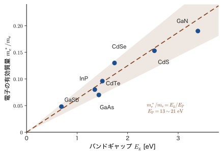
考察：異核の鎖でギャップが開くと，有効質量はどうなるか
単原子の結晶 Ge（$E_{\mathrm g}=0.67\ \mathrm{eV}$）と，同じ電子数をもつ化合物 GaAs（$1.43\ \mathrm{eV}$）を比べると，異なる原子の軌道エネルギーの差 $\Delta$（イオン結合性）が加わることで，バンドギャップが広がり，伝導帯が上がる．これは，式 \eqref{eq:41-ionic} の $E_{\mathrm g}=\Delta$ に対応する．一方，表41.3 では，イオン結合性をもつ直接ギャップの III–V，II–VI 化合物の電子の質量は $0.05$〜$0.2$ と小さく，Si，Ge の電子の伝導質量（例題41.11，41.12 の $0.26$，$0.117$）と比べても同程度かそれ以下である．「伝導帯が高くなる」ことと「電子が軽い」ことは，どうつながっているのだろうか．
2 バンド模型の式 \eqref{eq:41-mstar-gap} では，同じ $|\beta|a$ ならギャップが大きいほど有効質量は大きい．図41.10 のように，化合物の中では質量はギャップとともに増え，Ge の $\Gamma$ 点の谷（$E_{\mathrm g}\approx0.8\ \mathrm{eV}$，$m^*\approx0.04\,m_{\mathrm e}$）と GaAs（$1.43\ \mathrm{eV}$，$0.07\,m_{\mathrm e}$）を比べても，質量はギャップにほぼ比例している．つまり，異核にしてギャップを広げること自体は，電子を重くする向きにはたらく．化合物の電子が軽いのは，直接ギャップの化合物では伝導帯の底が $\Gamma$ 点にあり，等方的で軽い $s$ 的な谷になっているためである．Si の伝導帯の底（$\Gamma$ から $X$ 点へ向かう軸上）や Ge の伝導帯の底（$L$ 点）は，長軸方向が重く横方向が軽い異方的な谷（41.7.1）で，等方的な $\Gamma$ の谷とは事情が違う．イオン結合性は，バンドギャップの大きさを通して，有効質量に影響するのである．
41.8 電気伝導度 — 群速度・占有のずれ・Drude の式
金属に電圧をかけると電流が流れ，電流は電圧に比例する（Ohm の法則）．古典物理では，これを「自由電子が電場で加速され，散乱されながら進む」と説明した（大学基礎物理学 第37章 37.3，固体物理学 第15章 15.6）．バンドの言葉では，どのように理解されるだろうか．この節では，電場を加えたときの電子の占有の変化から，電気伝導度 $\sigma=ne_0^2\tau/m^*$ を導く．なお，電場は 41.5.3 と同じく $E_x$ と書く（エネルギー $E(k)$ との混同を避けるため，電場の成分は必ず添字をつける）．
41.8.1 波の 2 つの速度 — 群速度と位相速度
波には，2 つの速度がある．$e^{i(kx-\omega t)}$ のような波で，位相 $kx-\omega t$ が一定の点（波の山の位置）の動く速さが位相速度（phase velocity）$v_p=\omega/k$ で，波自体が動く速度である．一方，波数がわずかに違う波を重ねてできる波の束（波束）の包絡線の動く速さが群速度（group velocity）$v_g=\mathrm{d}\omega/\mathrm{d}k$ である（大学基礎物理学 第17章 17.5）．
\begin{equation} v_p=\frac{\omega}{k}\quad(\text{波自体が動く速度}),\qquad v_g=\frac{\mathrm{d}\omega}{\mathrm{d}k}\quad(\text{波の束が動く速度}) \label{eq:41-vpvg} \end{equation}$v_g=0$ なら波の束は止まって見え，$v_p=0$（$\omega=0$）なら波は時間とともに動かない．電子バンドの定在波（41.8.2，41.9.1）は，$+k$ と $-k$ の 2 つの進行波（$\omega\ne0$）の重ね合わせで，群速度が 0 になった状態である．たとえば $k\pm\delta k$ の 2 つの波を足すと，$\cos(kx-\omega t)\cos(\delta k\,x-\delta\omega\,t)$（の 2 倍）になり，速い振動 $\cos(kx-\omega t)$ が速さ $\omega/k$ で，ゆるやかなうなり（包絡線）$\cos(\delta k\,x-\delta\omega\,t)$ が速さ $\delta\omega/\delta k\to\mathrm{d}\omega/\mathrm{d}k$ で動く．
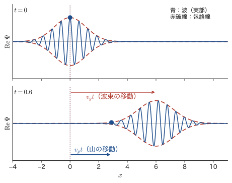
電子のエネルギーは $E=\hbar\omega$ なので，波数 $k$ のあたりの波束の速度は，式 \eqref{eq:41-vpvg} の $v_g=\mathrm{d}\omega/\mathrm{d}k$ から $v_g=\hbar^{-1}\mathrm{d}E/\mathrm{d}k$，すなわち 41.5 節の式 \eqref{eq:41-vg} になる．ここで，「波」とは，古典的な波ではなく，電子の波動関数そのものである．したがって，バンドの中の電子の平均の速度は，波動関数の波の束が動く速度（群速度）である．自由電子では $\omega=\hbar k^2/2m$ なので $v_p=\hbar k/2m$，$v_g=\hbar k/m$ となって，$v_g=2v_p$ である（図41.11）．
注意：電子の速度は位相速度ではない
エネルギーの原点は自由に選べるので，$E\to E+E_0$ としても物理は変わらない．しかし，位相速度 $v_p=E/(\hbar k)$ は $E_0$ とともに変わってしまい，物理的な意味がない．群速度 $v_g=\hbar^{-1}\mathrm{d}E/\mathrm{d}k$ は $E_0$ に依らない．電子（粒子）の速度は，波の束の速さである群速度で与えられる．
41.8.2 電場がないとき — 定在波と占有の対称性
電場がないとき，バンドの電子は $E(\pm k)$ が同じ値なので，$+k$ 方向に進む波と $-k$ 方向に進む波が同じ確率で混ざり，全体として定在波になっている．占有している状態の分布は $k=0$ について左右対称で（図41.12(a)），$+k$ の電子と $-k$ の電子の速度が打ち消し合って，全体の電流は 0 である．
応用：金属光沢 — 自由電子が光を反射する
光は電磁波で，電磁波は電荷をもつ粒子を振動させる．光の電場が $+$ と $-$ の向きに行ったり来たりするのに合わせて，金属の自由電子も $+k$，$-k$ の向きに行き来し，その振動が電磁波を再放射して，光を反射する．これが金属光沢の正体である．もう少し定量的に見てみよう．電場 $E_x(t)=E_0e^{-i\omega t}$ の中で，散乱を無視した電子の運動方程式は $m\dot{v}=-e_0E_x$，すなわち $-i\omega m\,v=-e_0E_0e^{-i\omega t}$ で，解は $v=-\dfrac{ie_0}{m\omega}E_x$ である．電流密度は $j=-ne_0v=\dfrac{ine_0^2}{m\omega}E_x\equiv\sigma(\omega)E_x$．誘電関数は $\varepsilon(\omega)=1+\dfrac{i\sigma(\omega)}{\varepsilon_0\omega}=1-\dfrac{\omega_{\mathrm p}^2}{\omega^2}$，$\omega_{\mathrm p}^2=\dfrac{ne_0^2}{\varepsilon_0m}$ となる．$\omega\lt\omega_{\mathrm p}$ では $\varepsilon\lt0$ となって，光は金属の内部に進入できず反射される．$\omega_{\mathrm p}$ をプラズマ振動数という．銅の自由電子密度（$n=8.47\times10^{28}\ \mathrm{m^{-3}}$）では $\hbar\omega_{\mathrm p}=10.8\ \mathrm{eV}$ で，可視光（光子のエネルギー $1.6$〜$3.3\ \mathrm{eV}$）はすべて $\omega\lt\omega_{\mathrm p}$ を満たすので反射される．実際の銅が赤みを帯びるのは，$d$ 電子の光吸収（バンド間遷移）が $2\ \mathrm{eV}$ 付近から始まるためである（第IX部）．
41.8.3 電場を加えると — 占有のずれ
電場 $\bm{E}$（$x$ 成分 $E_x$）を加えると，電子（電荷 $-e_0$）は力 $F=-e_0E_x$ を受け，式 \eqref{eq:41-force} により
\begin{equation} \hbar\frac{\mathrm{d}k}{\mathrm{d}t}=-e_0E_x\qquad\Longleftrightarrow\qquad\frac{\mathrm{d}p}{\mathrm{d}t}=-e_0E_x\ \ (p=\hbar k) \label{eq:41-kdot} \end{equation}で，すべての電子の波数が同じ割合で $-e_0E_x/\hbar$ だけ変化する．占有状態の分布全体が $k$ 軸上でずれ，電場と逆向き（電子は負電荷なので）に片寄る（図41.12(b)）．左右の均衡が崩れて，$+k$ の電子が $-k$ の電子より多くなり，電流が流れる．これが，バンド構造の言葉での電気伝導の説明である．
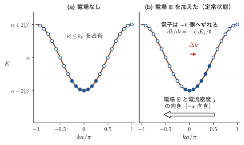
Fermi 波数・Fermi 速度・Fermi 面
絶対零度では，電子は低いエネルギーの状態から順に，1 つの $k$ 状態にスピンの向きが逆の 2 個ずつ詰まる．電子が占有する最大の波数を Fermi 波数 $k_{\mathrm F}$，その状態のエネルギーを Fermi エネルギー $E_{\mathrm F}$，占有された領域の境界を Fermi 面という．1 次元では，単位長さあたりの電子数を $n_1$ として $k_{\mathrm F}=\pi n_1/2$（占有されるのは $-k_{\mathrm F}\le k\le k_{\mathrm F}$ で，Fermi 面は $k=\pm k_{\mathrm F}$ の 2 点），3 次元では電子の数密度を $n$ として $k_{\mathrm F}=(3\pi^2n)^{1/3}$ である（自由電子気体の場合．導出は第10章 10.7）．Fermi 速度は Fermi 面上の電子の速さで，自由電子では $v_{\mathrm F}=\hbar k_{\mathrm F}/m$，バンドの中では $v_{\mathrm F}=\hbar^{-1}(\mathrm{d}E/\mathrm{d}k)_{k_{\mathrm F}}$ である．電場に応答できるのは Fermi 面の付近の電子である．
導出：電気伝導度 $\sigma=ne_0^2\tau/m^*$
[i] 波数のずれ．電場を加えつづければ，式 \eqref{eq:41-kdot} により $k$ は限りなく増える．しかし現実の結晶では，電子は不純物・格子振動（フォノン）・欠陥に散乱され，散乱のたびにずれが元に戻る．散乱と散乱の間の平均の時間を緩和時間（relaxation time）$\tau$ とすると，散乱される前に電子が電場から得るずれは，式 \eqref{eq:41-kdot} に $\Delta t=\tau$ をかけて
$$ \Delta k=-\frac{e_0E_x}{\hbar}\,\Delta t=-\frac{e_0}{\hbar}E_x\,\tau $$となる（もう少し丁寧には，ずれ $\delta k$ が $\dot{\delta k}=-e_0E_x/\hbar-\delta k/\tau$ に従い，$\dot{\delta k}=0$ の定常状態で $\delta k=-e_0E_x\tau/\hbar$ になる．同じ結果である）．
[ii] 速度のずれ．波数が $\Delta k$ ずれたことで，電子の平均の速度は，$\Delta p=\hbar\Delta k$ と $\Delta v=\Delta p/m$ から
$$ \Delta v=\frac{\Delta p}{m}=\frac{\hbar}{m}\Delta k . $$（占有された状態の有効質量が一定，すなわち $E(k)$ が放物線と見なせるバンドの底の近くでは，$m$ を有効質量 $m^*$ に置き換える．一般のバンドでは下の注意のとおり扱いが変わる．）
[iii] 電流密度．単位体積あたり $n$ 個の電子が電荷 $-e_0$ をもち，それぞれが $\Delta v$ の速度をもつので，電流密度（単位面積を単位時間に通る電荷）は
$$ j=-ne_0\,\Delta v=-ne_0\,\frac{\hbar}{m}\Delta k=-ne_0\,\frac{\hbar}{m}\Bigl(-\frac{e_0}{\hbar}E_x\tau\Bigr)=\frac{ne_0^2\tau}{m}\,E_x . $$[iv] Ohm の法則との対応．長さ $L$，断面積 $S$ の導体に電圧 $V$ をかけると，電場は $E_x=V/L$，電流は $I=jS$ である．Ohm の法則 $V=IR$ に，抵抗 $R=\rho L/S$（$\rho$ は抵抗率）を代入すると $E_xL=jS\cdot\rho L/S$，すなわち $E_x=\rho j$ である．$\sigma\equiv1/\rho$（電気伝導度（電気伝導率ともいう）は抵抗率の逆数）とおくと，Ohm の法則の局所形 $j=\sigma E_x$ が得られる．[iii] と比べて，
\begin{equation} \sigma=\frac{ne_0^2\tau}{m}\ \ \Bigl(\text{バンドの底の近く（放物線バンド）では }m\to m^*:\ \sigma=\frac{ne_0^2\tau}{m^*}\Bigr) \label{eq:41-drude} \end{equation}を得る．次元の確認：$[n]=\mathrm{m^{-3}}$，$[e_0^2]=\mathrm{C^2}$，$[\tau]=\mathrm{s}$，$[m]=\mathrm{kg}$ より $\mathrm{C^2\,s\,m^{-3}\,kg^{-1}}$．これは $\mathrm{S/m}$（$=\mathrm{A\,V^{-1}\,m^{-1}}$）に等しく，抵抗の逆数（コンダクタンス，単位 $\mathrm{S}$）を長さで割った次元である（$\mathrm{C=A\,s}$，$\mathrm{V=J/C=kg\,m^2\,s^{-2}\,C^{-1}}$ を使うと $\mathrm{A^2s^3kg^{-1}m^{-3}}$ で一致する）．
（導出終わり）
注意：$\sigma=ne_0^2\tau/m^*$ が使えるのは，占有された状態が放物線的なバンドの底の近くにあるとき
導出 [ii] の $\Delta v=(\hbar/m^*)\Delta k$ は，占有された電子の有効質量が一定（$E(k)$ が放物線）のときの近似である．$s$ バンドの $m^*(k)=m_0/\cos ka$（式 \eqref{eq:41-mstar-k}）は $k$ とともに変わり，半分詰めの鎖の Fermi 点 $k_{\mathrm F}=\pi/2a$ では $\cos ka=0$ で $m^*=\infty$ となるから，$\sigma=ne_0^2\tau/m^*(k_{\mathrm F})$ は意味をもたない（演習41.4）．一般のバンドでは，電場でずれた占有の分布から，電流を電子の速度そのものの和として直接計算する．1 次元（スピンを含め，絶対零度）では，占有された領域が $\Delta k=-e_0E_x\tau/\hbar$ だけずれると，2 つの Fermi 点で右向きの電子が増え左向きの電子が減るぶんだけが電流になり，次のようになる．
\begin{equation} I=\frac{2e_0^2\tau}{\pi\hbar}\,v_{\mathrm F}\,E_x\qquad(1\text{ 次元の鎖．}I\text{ は鎖を流れる電流}) \label{eq:41-drude-1d} \end{equation}（1 次元では電流 $I$ を電場 $E_x$ で割ったもの $\sigma_{1}=2e_0^2\tau v_{\mathrm F}/(\pi\hbar)$ が伝導度にあたる．）自由電子では $n_1=2k_{\mathrm F}/\pi$，$v_{\mathrm F}=\hbar k_{\mathrm F}/m$ なので $\sigma_1=n_1e_0^2\tau/m$ となり，式 \eqref{eq:41-drude} と一致する．一方，半分詰めの $s$ 鎖（$n_1=1/a$，$v_{\mathrm F}=2|\beta|a/\hbar$）では $\sigma_1=n_1e_0^2\tau/m_{\mathrm{eff}}$ とおくと $m_{\mathrm{eff}}=\pi\hbar^2/(4|\beta|a^2)=(\pi/2)\,m_0$（$m_0=\hbar^2/(2|\beta|a^2)$）で，有限の値になる．$m^*(k_{\mathrm F})=\infty$ は現れない．
式 \eqref{eq:41-drude} は Drude（ドルーデ）の式とよばれ，古典的な自由電子模型（Drude 模型，1900 年）から出発しても同じ形が得られる．量子力学（バンド理論）で新しいのは，（1）質量が真空中の $m_{\mathrm e}$ から有効質量 $m^*$（放物線的なバンドの底の近く．一般には上の注意のとおり）に変わること，（2）電流を運ぶのは，満ちたバンドではなく，部分的にしか満ちていないバンドの電子（または正孔）だけであること，の 2 点である．満ちたバンドでは，電場による $k$ のずれが，$k$ 空間の周期性（$k$ と $k+2\pi/a$ が同じ状態）のために占有の分布を変えず，電流は 0 のままである．これが，絶縁体（満ちたバンドと空のバンドの間に大きなギャップがある物質）が電流を運ばない理由である．
注意：$I$ ではなく $j$（電流密度）
$n$ は単位体積あたりの電子数で，$j=-ne_0\Delta v$ の左辺は電流 $I$（単位 $\mathrm{A}$）ではなく，電流密度 $j$（単位 $\mathrm{A/m^2}$）である．両者は断面積 $S$ を介して $I=jS$ の関係にある．$\sigma=ne_0^2\tau/m$ は単位 $\mathrm{S/m}$ で，$j=\sigma E_x$ でだけ次元が合う．「$I=\sigma E_x$」は次元が合わない．
例題41.13 銅の伝導度・占有のずれ・ドリフト速度
銅の伝導電子（1 原子あたり 1 個，$n=8.47\times10^{28}\ \mathrm{m^{-3}}$）の緩和時間を $\tau=25\ \mathrm{fs}$（$1\ \mathrm{fs}=10^{-15}\ \mathrm{s}$）とする．(1) 伝導度 $\sigma$ と抵抗率 $\rho$ を求めよ．(2) $E_x=1000\ \mathrm{V/m}$（$10\ \mathrm{V/cm}$）の電場での波数のずれ $\Delta k$ とドリフト速度 $v_{\mathrm d}$ を求め，Fermi 波数 $k_{\mathrm F}=(3\pi^2n)^{1/3}$ と比べよ．(3) Fermi 速度 $v_{\mathrm F}=\hbar k_{\mathrm F}/m_{\mathrm e}$ と平均自由行程 $\ell=v_{\mathrm F}\tau$ を求めよ．有効質量は $m_{\mathrm e}$ とする．
解答 (1) 式 \eqref{eq:41-drude} より
$$ \sigma=\frac{8.47\times10^{28}\times(1.602\times10^{-19})^2\times25\times10^{-15}}{9.109\times10^{-31}}\ \mathrm{S/m}=5.97\times10^{7}\ \mathrm{S/m},\qquad \rho=\frac1\sigma=1.68\times10^{-8}\ \Omega\,\mathrm{m}. $$実測の伝導度は室温で $5.96\times10^7\ \mathrm{S/m}$（$\rho=1.68\times10^{-8}\ \Omega\,\mathrm{m}$）で，よく一致する（$\tau=25\ \mathrm{fs}$ は，この実測値から逆算した値である）．(2) $\Delta k=-\dfrac{e_0E_x\tau}{\hbar}=-\dfrac{1.602\times10^{-19}\times10^{3}\times25\times10^{-15}}{1.0546\times10^{-34}}=-3.8\times10^{4}\ \mathrm{m^{-1}}$（大きさ $3.8\times10^4\ \mathrm{m^{-1}}$），$|v_{\mathrm d}|=\dfrac{\hbar|\Delta k|}{m_{\mathrm e}}=\dfrac{e_0E_x\tau}{m_{\mathrm e}}=4.4\ \mathrm{m/s}$．$k_{\mathrm F}=(3\pi^2\times8.47\times10^{28})^{1/3}=1.36\times10^{10}\ \mathrm{m^{-1}}$ なので，$|\Delta k|/k_{\mathrm F}=2.8\times10^{-6}$ にすぎない．Fermi 面は，全体の大きさの百万分の 3 ほどしかずれない．(3) $v_{\mathrm F}=\dfrac{1.0546\times10^{-34}\times1.36\times10^{10}}{9.109\times10^{-31}}=1.57\times10^{6}\ \mathrm{m/s}$，$\ell=v_{\mathrm F}\tau=1.57\times10^6\times25\times10^{-15}=3.9\times10^{-8}\ \mathrm{m}=39\ \mathrm{nm}$．電子は毎秒 $10^6\ \mathrm{m}$ 以上の速さで走り回っているが，電場によって生じる正味の流れは毎秒 $4\ \mathrm{m}$ ほどである．
41.9 バンド図の物質構造的理解 — 半分詰めの鎖・電子が動くこと・Peierls 転移
ここまでは，$E(k)$ を，電子の速さ・質量・電流という「物性の側」から見てきた．この節では，同じ $E(k)$（波の角振動数 $\omega=E/\hbar$ と波数 $k$ の関係，すなわち分散関係）を，原子軌道がどのように並んで波動関数を作っているかという「構造の側」から読み直す．原子が 1 次元に並んだ結晶の電子エネルギーは，LCAO の結果 \eqref{eq:41-Ek} で，$E(k)=\alpha+2\beta\cos ka$ である．各原子が水素原子で，軌道がすべて $1s$ 軌道の場合（$\alpha$，$\beta$ は 41.1 節の定義）を考える．
41.9.1 1 次元の水素結晶 — 結合性・反結合性と $\beta\lt 0$ の意味
$k=0$ と $k=\pi/a$ の状態は，41.3 節のとおり，
$$ E(0)=\alpha+2\beta\ \ (\text{結合性軌道}),\qquad E\!\left(\frac{\pi}{a}\right)=\alpha-2\beta\ \ (\text{反結合性軌道}) $$で，反結合性軌道は結合性軌道より高いエネルギーをもつ．したがって $E(\pi/a)\gt E(0)$，すなわち $\beta\lt 0$ である．図41.13 の 1 段目（$k=0$）と 3 段目（$k=\pi/a$）は，隣り合う 4 個の原子のそれぞれについて，波動関数（Bloch 和の係数）の値を描いたものである．$k=0$ では，すべての原子に同じ符号の同じ大きさ $A$ の $1s$ 軌道が重なる（$\psi=A,A,A,A$）．$k=\pi/a$ では，符号が交互に変わる（$A,-A,A,-A$）．どの原子でも，振幅の大きさ（絶対値）は $|\psi|=A$ で同じである．2 段目の $k=\pm\pi/2a$ は 41.9.2 で Fermi 波数の状態として扱う．
$k=\pi/a$ の状態は，右向きの波と左向きの波が一体になった定在波である．41.2.1 で見たように，$k=\pi/a$ と $k=-\pi/a$ は同じ状態だった．実際，$e^{i\pi n}=e^{-i\pi n}=(-1)^n$ なので，右向きの波の係数 $e^{i\pi n}$ と左向きの波の係数 $e^{-i\pi n}$ の列は同じ $(A,-A,A,-A)$ になる（2 つの別の波の和ではなく，1 つの状態である）．係数は実数で，節の位置が原子の間に固定されており，格子による Bragg 反射（波数の差 $2\pi/a$ が逆格子ベクトルに等しい）が右向きの波と左向きの波を結びつけた状態にあたる．$\mathrm{d}E/\mathrm{d}k=0$ なので群速度は 0 で，電子は動いていない（$v=0$）．これに対して $k=\pm\pi/2a$ は，$e^{i\pi n/2}=i^n$ と $e^{-i\pi n/2}=(-i)^n$ という，互いに異なる 2 つの状態（右向きと左向きの進行波）で，その和 $\tfrac12\bigl[i^n+(-i)^n\bigr]=\cos(n\pi/2)=(1,0,-1,0)$ が図41.13 の 2 段目の実数の定在波である（例題41.14）．
問い：原子間の相互作用 $\beta$ が負であるとは何を意味するのか
$\beta=\mel{\phi_n}{\hat{H}}{\phi_{n+1}}$ は，2 つの軌道の重なる領域（隣り合う 2 つの原子核の間）の電子の力学的エネルギーに関する積分である．この領域では，電子は両方の原子核から同時に引力を受けるので，ポテンシャルエネルギー（負）は，電子が 1 つの核だけの近くにいるときより低い．$\beta$ の主な寄与はこのポテンシャルエネルギーで，$\beta\lt 0$ は，電子が 2 つの核の間にいることでエネルギーが下がる（結合ができる）ことを意味している．結合性軌道（$k=0$）が低いエネルギーをもつのは，電子が原子核の間に集まって，この利益を最大にするからである．
例題41.14 4 原子の環の Bloch 状態
$N=4$ の水素原子の環（$\beta\lt 0$）の 4 本の準位と，各準位の $1s$ 軌道の係数の並び（$n=0,1,2,3$）を，Bloch 和から求めよ．$k=\pm\pi/2a$ の 2 つの状態から作れる実数の状態も示せ．
解答 $k=2\pi j/(4a)$（$j=0,1,2,3$）で，$ka=j\pi/2$．エネルギーは $E_j=\alpha+2\beta\cos(j\pi/2)$：$E_0=\alpha+2\beta$，$E_1=E_3=\alpha$，$E_2=\alpha-2\beta$．係数は $c_n=e^{ikna}=e^{ij\pi n/2}=i^{jn}$ である．$j=0$：$(1,1,1,1)$．$j=2$：$(-1)^n=(1,-1,1,-1)$．$j=1$：$i^n=(1,i,-1,-i)$，$j=3$（$k=-\pi/2a$）：$(-i)^n=(1,-i,-1,i)$．この 2 つは複素数の進行波（大きさ $|c_n|=1$ が全原子で等しく，位相が $90^\circ$ ずつ回る）で，右向きと左向きに進む波である．足し引きして $\tfrac12(i^n+(-i)^n)=\cos(n\pi/2)=(1,0,-1,0)$（$k=\pm\pi/2a$ の $\cos$ 型の定在波），$\tfrac1{2i}(i^n-(-i)^n)=\sin(n\pi/2)=(0,1,0,-1)$（$\sin$ 型）を得る．規格化すると，$\dfrac12(1,1,1,1)$，$\dfrac{1}{\sqrt2}(1,0,-1,0)$，$\dfrac{1}{\sqrt2}(0,1,0,-1)$，$\dfrac12(1,-1,1,-1)$ の 4 本で，これらは互いに直交する．図41.13 の 3 段は，この 4 原子の並び（$A,A,A,A$），（$A,0,-A,0$），（$A,-A,A,-A$）を表す．
41.9.2 半分詰めの鎖 — 電子はどこまで占有するか
1 原子あたり 1 個の電子（$1s$ 電子）をもつ，$N$ 原子の水素の鎖を考える．電子は全部で $N$ 個，1 本のバンドは $2N$ 個の電子を収容できるので，バンドは半分詰めになる．$k$ 状態 $N$ 個のうち，エネルギーの低い半分の $N/2$ 個の $k$ 状態が，各々スピン 2 個ずつで占有される．$E(k)=\alpha+2\beta\cos ka$（$\beta\lt 0$）で低い順に $|k|$ が小さい状態から詰めると，占有は $|k|\lt \pi/2a$ で，最高占有準位は $E(\pm\pi/2a)=\alpha$ である（図41.14(a)）．この電子の Fermi エネルギーは $E_{\mathrm F}=\alpha$，Fermi 波数は $k_{\mathrm F}=\pi/2a$ である（第10章 10.7 で自由電子気体について定義した Fermi エネルギー・Fermi 波数の，鎖の版．1 次元の $k_{\mathrm F}=\pi n_1/2$ に $n_1=1/a$ を入れても $\pi/2a$ になる）．
$k_{\mathrm F}$ の直上には空の状態が連続してあるので，どんなに小さなエネルギーでも電子を励起できる．ギャップのない半分詰めのバンドは金属である．基底状態では，電子波は，$+k$ と $-k$ の波が同じだけ占有されており，合わさって定在波になっている．この定在波では，どちらかの向きに動いている電子はいなくて，電流は流れない．
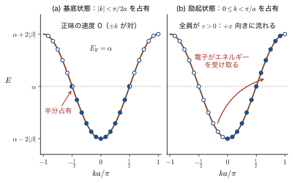
電子にエネルギーを与えると（電場を加える，光を当てる），占有は (a) から (b) のほうへ変わる．基底状態の最高占有準位（$k=\pm\pi/2a$）の電子が，$k=\pi/a$ の状態へ移る過程を，エネルギーで書くと次のとおりである（図41.13 の 2 段目から 3 段目への矢印）．
$$ E\!\left(\pm\frac{\pi}{2a}\right)=\alpha\ \ (\text{基底状態})\qquad\longrightarrow\qquad E\!\left(\frac{\pi}{a}\right)=\alpha-2\beta\quad(\text{電子がエネルギー }-2\beta=2|\beta|\text{ を受け取る}) $$電子が $k=\pi/2a$（$E=\alpha$）付近から $k=\pi/a$（$E=\alpha-2\beta$）のほうへ移ると，電子波の定在波の状態が破られる．$0\lt k\lt \pi/a$ の状態はすべて $v=\hbar^{-1}\mathrm{d}E/\mathrm{d}k=(2|\beta|a/\hbar)\sin ka\gt 0$ で，電子は $k=\pi/a$ の方向，すなわち $x$ 軸の正の向きに動く．占有が (b) の状態のときの 1 原子あたりのエネルギー（両スピン）は，$\dfrac{a}{2\pi}\displaystyle\int_0^{\pi/a}(\alpha+2\beta\cos ka)\,\mathrm{d}k\times2=\alpha$ で，基底状態 $\dfrac{a}{2\pi}\displaystyle\int_{-\pi/2a}^{\pi/2a}(\alpha+2\beta\cos ka)\,\mathrm{d}k\times2=\alpha+\dfrac{4\beta}{\pi}=\alpha-\dfrac{4|\beta|}{\pi}$ より，1 原子あたり $\dfrac{4|\beta|}{\pi}=1.27|\beta|$ だけ高い．これが，占有をずらしきるのに必要な最大のエネルギーである（$|\beta|=1\ \mathrm{eV}$ なら $1.27\ \mathrm{eV}$）．銅の例（例題41.13）の電場によるずれ（$k_{\mathrm F}$ の $3\times10^{-6}$）は，これに比べればごく小さい．
41.9.3 電子が動くとは — 各原子の軌道の状態が変わること
結晶の中の電子が「動く」という現象は，各原子の波動関数の状態が変化することと捉えることができる．電子の状態を $\Psi=\sum_nc_n(t)\phi_n$ と書くと，$|c_n|^2=P_n$ は，電子が $n$ 番目の原子にいる確率である．電子が動く（確率が原子から原子へ移る）とは，係数 $c_n(t)$ が時間とともに変わることである．これを式で確かめよう．
導出：確率の流れと群速度
時間を含む Schrödinger 方程式 $i\hbar\,\partial_t\Psi=\hat{H}\Psi$ に $\Psi=\sum_nc_n(t)\phi_n$ を代入し，$\phi_m^*$ を掛けて積分すると（定義41.1 の $H_{mn}$ を使う），$i\hbar\,\dot{c}_n=\alpha c_n+\beta\,(c_{n-1}+c_{n+1})$ を得る．確率 $P_n=c_n^*c_n$ の時間変化は，$\dot{c}_n=-\dfrac{i}{\hbar}\bigl[\alpha c_n+\beta(c_{n-1}+c_{n+1})\bigr]$ とその複素共役から
$$ \frac{\mathrm{d}P_n}{\mathrm{d}t}=2\,\mathrm{Re}\bigl(c_n^*\dot{c}_n\bigr)=2\,\mathrm{Re}\Bigl\{-\frac{i}{\hbar}\bigl[\alpha P_n+\beta\,c_n^*(c_{n-1}+c_{n+1})\bigr]\Bigr\}=\frac{2\beta}{\hbar}\,\mathrm{Im}\bigl[c_n^*(c_{n-1}+c_{n+1})\bigr] $$である（$\mathrm{Re}(-iz)=\mathrm{Im}\,z$ を使った．$\alpha P_n$ は実数なので寄与しない）．ここで $n$ 番目から $n+1$ 番目の原子へ流れる確率の流れを $J_{n\to n+1}\equiv-\dfrac{2\beta}{\hbar}\mathrm{Im}\bigl(c_n^*c_{n+1}\bigr)$ と定義する．$\mathrm{Im}(c_{n-1}^*c_n)=-\mathrm{Im}(c_n^*c_{n-1})$ なので，上式は $\dfrac{\mathrm{d}P_n}{\mathrm{d}t}=J_{n-1\to n}-J_{n\to n+1}$ と書け，確率の保存則（連続の式）になっている．
Bloch 和の状態 $c_n(t)=\dfrac{1}{\sqrt N}e^{i(kna-E_kt/\hbar)}$ では，$P_n=1/N$ はどの原子でも，どの時刻でも同じで，$c_n^*c_{n+1}=e^{ika}/N$ なので $J_{n\to n+1}=-\dfrac{2\beta}{\hbar}\dfrac{\sin ka}{N}$ となる．確率密度が一様でも，位相が $ka$ ずつずれていることで，原子から原子へ一定の流れが生じる．（環では $n$ が周期的で $\langle x\rangle$ は定義しにくいので，端の影響が無視できる長い開いた鎖の内部，または環に沿った 1 周期の平均として考える．）電子の位置の期待値 $\langle x\rangle=a\sum_nnP_n$ は，1 つの結合を確率 $J$ が流れるたびに距離 $a$ だけ動くので，$N$ 個の結合すべてを合わせて $\dfrac{\mathrm{d}\langle x\rangle}{\mathrm{d}t}=a\sum_nJ_{n\to n+1}=aNJ_{n\to n+1}$ である．これが電子の平均の速度 $v$ で，
$$ v=-\frac{2\beta a}{\hbar}\sin ka=\frac{1}{\hbar}\frac{\mathrm{d}}{\mathrm{d}k}\bigl(\alpha+2\beta\cos ka\bigr)=\frac{1}{\hbar}\frac{\mathrm{d}E}{\mathrm{d}k} $$となる．これは，群速度 \eqref{eq:41-vg} と一致する．$k=0$ や $k=\pm\pi/a$ では $\sin ka=0$ で流れが 0 であり，定在波である．
（導出終わり）
つまり，原子軌道の係数 $c_n(t)$ の位相が隣の原子との間で $ka$ ずつずれているとき，電子は確率の流れ（ホッピング）として動く．波動関数の言葉でいえば「$k$ が大きいほど位相が急に変わり，速度が大きい」（$v\propto\sin ka$）ということである．例題41.7 の 2 原子系の往復運動を，$N$ 個の原子の鎖に拡張したものと見ることができる．
41.9.4 金属・半導体・絶縁体と Peierls 転移
1 本のバンドは $2N$ 個の電子を収容できる．原子 1 個が電子を 1 個出す鎖（Na の $3s$ バンドなど）では，バンドは半分詰めで，上の議論のとおり金属になる．1 原子あたり 2 個の電子を出すと，（軌道が 1 個の模型では）バンドが電子で満ちる．軌道が複数ある原子では，偶数個の電子で複数本のバンドが満ちうる．満ちたバンドの上にギャップがあれば，電子は励起されにくく，電流を運べない．ギャップが小さければ（$\lesssim3\ \mathrm{eV}$）室温で少数の電子が励起される半導体（Si：$1.12\ \mathrm{eV}$），ギャップが大きければ（ダイヤモンド：$5.5\ \mathrm{eV}$）絶縁体である（表41.3）．ただし 3 次元の結晶では，隣り合うバンドが重なって（Mg の $3s$ と $3p$），電子数が偶数でも金属になることがある（第42章，固体物理学 第16章 16.7，マテリアル計算科学 第14章 14.2）．
では，半分詰めの 1 次元鎖は，本当に金属のままでいられるだろうか．答えは「いいえ」である．原子の間隔を交互に少しだけ変えて，共鳴積分を $\beta_1$，$\beta_2$ の 2 つの値が交互に現れるようにすると（結合交替），$k=\pm\pi/2a$（元の Fermi 面）にギャップが開き，電子のエネルギーが下がる．これを Peierls 転移（Peierls transition）という．その様子を，2 原子を 1 つの単位胞にとって，計算してみよう．
導出：結合交替のある鎖のバンド
単位胞（長さ $a_{\mathrm c}$）に 2 個の原子 A，B があり，胞の内側の結合（A–B）の共鳴積分が $\beta_1$，胞と胞の間の結合（B–次の胞の A）が $\beta_2$ とする．軌道エネルギーはどちらも $\alpha$ とする．A の Bloch 和と B の Bloch 和 $\psi_{\mathrm A}=\sum_ne^{ikna_{\mathrm c}}\phi_{\mathrm A,n}$，$\psi_{\mathrm B}=\sum_ne^{ikna_{\mathrm c}}\phi_{\mathrm B,n}$ を基底にとる．対角要素は $\alpha$．非対角要素は，$\mel{\phi_{\mathrm A,m}}{\hat{H}}{\phi_{\mathrm B,n}}$ が $m=n$ で $\beta_1$，$m=n+1$ で $\beta_2$，ほかは $0$ であることから，
$$ \frac1N\mel{\psi_{\mathrm A}}{\hat{H}}{\psi_{\mathrm B}}=\beta_1+\beta_2\,e^{-ika_{\mathrm c}} $$となる（$N$ は単位胞の数．$e^{-ika_{\mathrm c}}$ は $e^{-ikma_{\mathrm c}}e^{ikna_{\mathrm c}}$ で $m=n+1$ の項）．$2\times2$ の永年方程式は
$$ \begin{vmatrix}\alpha-E&\beta_1+\beta_2e^{-ika_{\mathrm c}}\\ \beta_1+\beta_2e^{ika_{\mathrm c}}&\alpha-E\end{vmatrix}=(\alpha-E)^2-\bigl|\beta_1+\beta_2e^{-ika_{\mathrm c}}\bigr|^2=0 $$で，$|\beta_1+\beta_2e^{-ika_{\mathrm c}}|^2=\beta_1^2+\beta_2^2+2\beta_1\beta_2\cos ka_{\mathrm c}$ を使うと，次を得る．
\begin{equation} E_\pm(k)=\alpha\pm\bigl|\beta_1+\beta_2e^{-ika_{\mathrm c}}\bigr|=\alpha\pm\sqrt{\beta_1^2+\beta_2^2+2\beta_1\beta_2\cos ka_{\mathrm c}} \label{eq:41-peierls} \end{equation}$k=\pi/a_{\mathrm c}$（ゾーン境界）では $\cos ka_{\mathrm c}=-1$ となり，平方根は $|\beta_1-\beta_2|$ になる．したがって，2 つのバンドの間に，ギャップ $E_{\mathrm g}=2\,|\beta_1-\beta_2|$ が開く．$\beta_1=\beta_2=\beta$ なら $E_\pm=\alpha\pm2|\beta||\cos(ka_{\mathrm c}/2)|$ で，ギャップは 0，これは元の一様な鎖のバンドを 2 倍の周期でたたんだものである．
なお，41.7.3 の異核の鎖（対角要素 $\alpha\pm\Delta/2$，胞の内側と胞の間の共鳴積分がともに $\beta$）も同じ形で，両方があるときは $E_\pm=\alpha\pm\sqrt{(\Delta/2)^2+\bigl|\beta_1+\beta_2e^{-ika_{\mathrm c}}\bigr|^2}$ とまとめられる（$\beta_1=\beta_2=\beta$ のとき $\bigl|\beta_1+\beta_2e^{-ika_{\mathrm c}}\bigr|^2=4\beta^2\cos^2(ka_{\mathrm c}/2)$ で式 \eqref{eq:41-ionic} に戻る）．
（導出終わり）
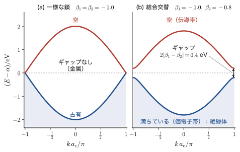
結合交替をつけると，占有された下のバンドのエネルギーは下がり，上のバンドは上がる．半分詰め（1 原子 1 電子）のとき，下のバンドだけが電子で満ちているので，電子の全エネルギーは下がる．$\beta_{1,2}=-(1\pm\delta)|\beta|$ とおくと，単位胞あたりのエネルギーの下がりは，$\delta\ll1$ のとき $\dfrac{4}{\pi}|\beta|\,\delta^2\Bigl[\ln\dfrac{4}{\delta}-\dfrac12\Bigr]$ になる（先頭の項は $\dfrac{4}{\pi}|\beta|\,\delta^2\ln(1/\delta)$．Fermi 面でギャップが開くので，$\delta^2$ より対数だけ大きい．たとえば $\delta=0.1$ では $0.041\,|\beta|$ で，数値積分と一致する．第 2 種完全楕円積分を使った導出と，弾性エネルギーとの釣り合いで決まるひずみの大きさは，第40章 40.5.5 節にある．そこでは炭素 1 個あたりで $\beta(1\pm\delta)=\beta_{1,2}$ と書くので，単位胞（炭素 2 個）あたりの本節の式は，その 2 倍である）．一方，原子間隔を変えるための弾性エネルギーの増加は $\delta^2$ に比例する．$\delta\to0$ では対数項が勝つので，どんなに小さな弾性エネルギーの増加があっても，電子のエネルギーの下がりのほうが大きく，鎖は自発的に結合交替（二量体化）を起こす．これが Peierls 転移で，1 次元の金属が低温で絶縁体（または半導体）になる原因である．たとえば，ポリアセチレン（$(\mathrm{CH})_x$）の鎖では，単結合と二重結合が交互に並んでおり，光学ギャップは約 $1.5\ \mathrm{eV}$ である．関連シミュレーター「分子軌道からバンドへ」の 4 番目のタブで，結合交替とギャップの関係を確かめられる．
例題41.15 結合交替によるギャップ
結合交替のある鎖で，$\beta_1=-1.0\ \mathrm{eV}$，$\beta_2=-0.8\ \mathrm{eV}$ のとき，(1) バンドギャップ，(2) $k=0$ での 2 つのバンドのエネルギー（$\alpha$ を基準）を求めよ．(3) $\beta_2=-0.6\ \mathrm{eV}$ ではギャップはいくらか．
解答 (1) 式 \eqref{eq:41-peierls} より，ゾーン境界（$ka_{\mathrm c}=\pi$）で $E_\pm-\alpha=\pm|\beta_1-\beta_2|=\pm|-1.0+0.8|=\pm0.2\ \mathrm{eV}$．ギャップは $2\times0.2=0.4\ \mathrm{eV}$．(2) $k=0$ では $\cos0=1$ で，$E_\pm-\alpha=\pm|\beta_1+\beta_2|=\pm1.8\ \mathrm{eV}$．したがって下のバンドは $-1.8\ \mathrm{eV}$（$k=0$）から $-0.2\ \mathrm{eV}$（ゾーン境界）まで，幅は $1.6\ \mathrm{eV}$ である．(3) $\beta_2=-0.6$ なら $E_{\mathrm g}=2\times|-1.0+0.6|=0.8\ \mathrm{eV}$．交替の差 $|\beta_1-\beta_2|$ が 2 倍（$0.2\to0.4$）になると，ギャップも 2 倍になる．
41.10 まとめと演習
41.10.1 まとめ
- 原子を $N$ 個並べると，軌道は $N$ 本になり，すべてが窓 $|E-\alpha|\lt 2|\beta|$（幅 $4|\beta|$）の中に入る．$N$ が大きいと準位は連続なバンドになる．開いた鎖は $E_j=\alpha+2\beta\cos\dfrac{j\pi}{N+1}$（$j=1,\dots,N$）．
- 環（周期境界条件）では Bloch 和 $\psi_k=\sum_ne^{ikna}\phi_n$，$k=2\pi j/(Na)$，第 1 Brillouin 域 $-\pi/a\lt k\le\pi/a$．$\psi_k(x+a)=e^{ika}\psi_k(x)$（Bloch の定理）．エネルギーは $E(k)=\alpha+2\beta\cos ka$．重なり積分 $S$ があれば $(\alpha+2\beta\cos ka)/(1+2S\cos ka)$．
- $s$ 軌道の鎖では $k=0$ が結合性で $\beta\lt 0$（U 字型）．軸方向の $p$ 軌道の鎖では $k=0$ が反結合性で $\beta\gt 0$（山型）．バンド幅は $4|\beta|$ で，軌道の重なりが大きいほど広い．
- 状態密度 $D(E)=1/\bigl(\pi\sqrt{4\beta^2-(E-\alpha)^2}\bigr)$：中央で最小 $1/(2\pi|\beta|)$，端で発散（van Hove 特異点）．一般に $D=(a/\pi)/|\mathrm{d}E/\mathrm{d}k|$．2 次元・3 次元では形が変わる．1 バンドは $2N$ 個の電子を収容する．
- LCAO と自由電子の対応：$\alpha=V_0+\hbar^2/(ma^2)$，$\beta=-\hbar^2/(2ma^2)$．$\alpha$ は軌道エネルギー，$\beta$ はホッピング（$t=-\beta$）．
- 群速度 $v=\hbar^{-1}\mathrm{d}E/\mathrm{d}k$，力 $F=\hbar\,\mathrm{d}k/\mathrm{d}t$ から，有効質量 $m^*=\hbar^2/(\mathrm{d}^2E/\mathrm{d}k^2)$．$s$ バンドでは $m^*(k)=m_0/\cos ka$．曲率が正なら電子的（$m^*\gt 0$），負なら負質量．
- 満ちたバンドは電流を運ばない．ほとんど満ちたバンドの空席は，電荷 $+e_0$，質量 $-m^*\gt 0$ の正孔として振る舞う．$m^*\lt 0$ の状態が占有されていても，それは正孔ではない．
- 半導体では，$\mu=e_0\tau/m^*$．2 バンド模型で $m^*\propto E_{\mathrm g}$．Si の伝導質量は $1/m_c=\frac13(1/m_l+2/m_t)$．
- 電場を加えると，占有が $k$ 空間でずれ（$\Delta k=-e_0E_x\tau/\hbar$），電流密度 $j=\sigma E_x$，$\sigma=ne_0^2\tau/m^*$（Cu：$5.97\times10^7\ \mathrm{S/m}$．放物線的なバンドの底の近くで成り立つ．一般には Fermi 点の速度 $v_{\mathrm F}$ で決まり，1 次元では $I=(2e_0^2\tau/\pi\hbar)\,v_{\mathrm F}E_x$）．波の速度は，電子の場合は群速度（波束の速さ）．
- 半分詰めの鎖は金属で，占有は $|k|\lt \pi/2a$．電子が動くとは，係数 $c_n(t)$ の位相のずれによる確率の流れ．結合交替 $\beta_1\ne\beta_2$ でギャップ $2|\beta_1-\beta_2|$ が開き絶縁体になる（Peierls 転移）．
41.10.2 演習問題
演習41.1 $p$ 軌道の鎖の $\beta$ の符号
軸方向を向いた $p_x$ 軌道を，すべて同じ向きに一列に並べた鎖がある．隣り合う軌道の重なり積分は $S=-0.20$，軌道エネルギー $\alpha=-6.0\ \mathrm{eV}$ である．(1) $k=0$ の Bloch 和の符号を描いて，結合性か反結合性かを述べよ．(2) $\beta\approx\alpha S$ として $\beta$ を求め，バンド幅と，最高・最低のエネルギー（と，その $k$）を求めよ．
ヒント：向かい合うローブの符号．$E(k)=\alpha+2\beta\cos ka$．
演習41.2 重なり積分があるときのバンド
式 \eqref{eq:41-Ek-S} で $\alpha=0$，$\beta=-1.0\ \mathrm{eV}$，$S=0.20$ とする．(1) $k=0$ と $k=\pm\pi/a$ のエネルギーを求めよ．(2) $S=0$ の値（$\mp2\ \mathrm{eV}$）との差を求めて，結合性軌道の下がり方と反結合性軌道の上がり方を比べよ．(3) バンド幅はいくらか．
ヒント：$E(0)=2\beta/(1+2S)$，$E(\pi/a)=-2\beta/(1-2S)$．
演習41.3 状態密度の規格化と 4 分の 1 の点
(1) 状態密度 $D(E)=1/\bigl(\pi\sqrt{4\beta^2-(E-\alpha)^2}\bigr)$ を，バンド全体にわたって積分すると 1 になることを示せ．(2) 下端から全状態の $1/4$ が入るエネルギー $E_{1/4}$ を求めよ．(3) この $E_{1/4}$ と，バンドの中央 $E=\alpha$ の $D$ の値を比べよ．
ヒント：$E-\alpha=2|\beta|\sin\varphi$ と置換する．
演習41.4 半分詰めの鎖の Fermi 速度
$|\beta|=2.0\ \mathrm{eV}$，$a=3.0\ \text{Å}$ の $s$ バンドの鎖に，1 原子あたり 1 個の電子が入っている．Fermi 波数 $k_{\mathrm F}$，Fermi 速度 $v_{\mathrm F}=\hbar^{-1}(\mathrm{d}E/\mathrm{d}k)_{k_{\mathrm F}}$，および Fermi 準位での有効質量を求めよ．
ヒント：半分詰めで $k_{\mathrm F}=\pi/2a$．$v=(2|\beta|a/\hbar)\sin ka$．
演習41.5 金属の伝導度とドリフト速度
電子密度 $n=1.0\times10^{29}\ \mathrm{m^{-3}}$，緩和時間 $\tau=10\ \mathrm{fs}$，有効質量 $m^*=m_{\mathrm e}$ の金属の伝導度 $\sigma$，抵抗率 $\rho$，移動度 $\mu$ を求めよ．また，電場 $E_x=1\ \mathrm{V/cm}$ でのドリフト速度と電流密度を求めよ．
ヒント：$\sigma=ne_0^2\tau/m^*$，$\mu=e_0\tau/m^*$，$|v_{\mathrm d}|=\mu E_x$，$j=\sigma E_x$．
演習41.6 電子と正孔の移動度の違い
表41.3 の Si（$m_{\mathrm h}^*=0.52$，$\mu_{\mathrm h}=480$），Ge（$m_{\mathrm h}^*=0.3$，$\mu_{\mathrm h}=1900$）の正孔について，緩和時間を求めよ．また Si で電子と正孔の移動度の比 $\mu_{\mathrm e}/\mu_{\mathrm h}$ を，有効質量の比と緩和時間の比に分けて説明せよ（電子の伝導質量は $m_c=0.26$，$\tau_{\mathrm e}=2.0\times10^{-13}\ \mathrm{s}$）．
ヒント：$\tau=\mu m^*/e_0$．
演習41.7 2 種の原子が交互に並ぶ鎖
軌道エネルギー $\alpha_{\mathrm A}=\alpha+\Delta/2$，$\alpha_{\mathrm B}=\alpha-\Delta/2$ の原子 A，B が交互に並び，A–B 間の共鳴積分がすべて $\beta$，単位胞の長さが $a$ とする．(1) $E_\pm(k)$ を導け．(2) $\Delta=0$ での結果を確かめよ．(3) ギャップ $E_{\mathrm g}$ と，ギャップ端での有効質量を求めよ．(4) GaAs（$E_{\mathrm g}=1.43\ \mathrm{eV}$，$m^*=0.07\,m_{\mathrm e}$）の値から，$v_0=|\beta|a/\hbar$ と $E_{\mathrm P}=2m_{\mathrm e}v_0^2$ を求めよ．
ヒント：2 種の Bloch 和を基底にとった $2\times2$ の永年方程式．非対角要素は $\beta(1+e^{-ika})$．
演習41.8 Bloch 和から周期性を確かめる
Bloch 和 $\psi_k(x)=\sum_ne^{ikna}\phi(x-na)$ について，(1) $k$ を $k+2\pi/a$ に置き換えても $\psi_k$ が変わらないこと（$k$ は第 1 Brillouin 域で考えれば十分）を示せ．(2) 電子の確率密度 $|\psi_k(x)|^2$ が周期 $a$ の周期関数であること，したがって原子ごとの電子密度が同じであることを示せ．
ヒント：(1) $e^{i(2\pi/a)na}=e^{2\pi in}=1$．(2) 式 \eqref{eq:41-bloch-thm}．
41.10.3 参考文献
- 望月泰英『物理学ノート 量子力学』（手書き講義ノート）のうち，LCAO を扱った紙面（量子力学1〜3 の本体とは別に，写真で補った紙面）．本章の底本．
- N. W. Ashcroft and N. D. Mermin, Solid State Physics, Holt, Rinehart and Winston (1976).
- C. Kittel, Introduction to Solid State Physics, 8th ed., Wiley (2004).
- W. A. Harrison, Electronic Structure and the Properties of Solids, W. H. Freeman (1980).
- P. Y. Yu and M. Cardona, Fundamentals of Semiconductors, 4th ed., Springer (2010).
- S. M. Sze and K. K. Ng, Physics of Semiconductor Devices, 3rd ed., Wiley (2007).
- R. E. Peierls, Quantum Theory of Solids, Oxford University Press (1955).
- W. P. Su, J. R. Schrieffer and A. J. Heeger, Phys. Rev. Lett. 42, 1698 (1979).
- P. Drude, Ann. Phys. 1, 566 (1900).
- 日本化学会編『化学便覧 応用化学編』第 7 版，丸善（表41.3 の出典）．
- A. Szabo and N. S. Ostlund, Modern Quantum Chemistry, Dover (1996)（LCAO・Hückel 法）．